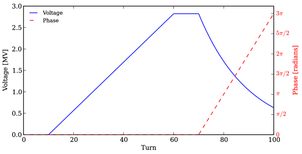
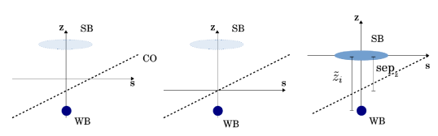
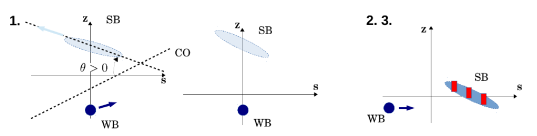
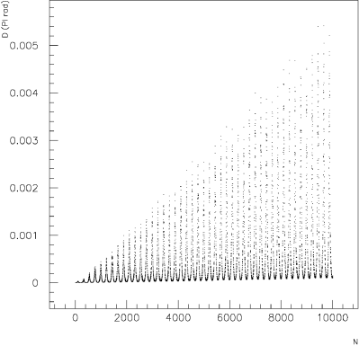
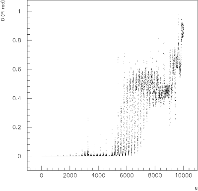
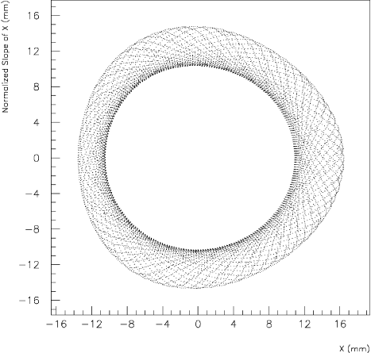
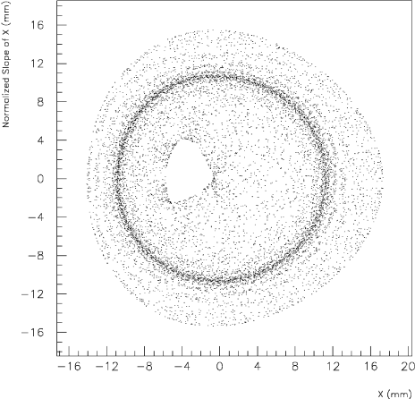
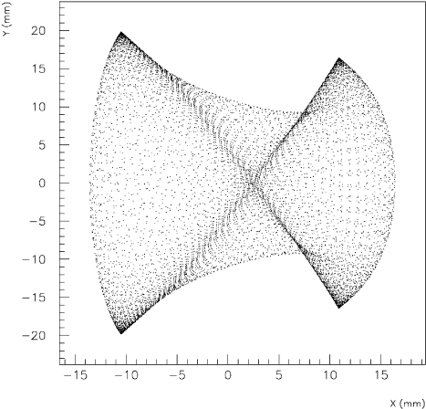
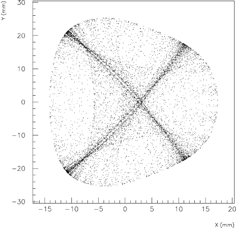

Single Particle Tracking Code Treating Transverse Motion with Synchrotron Oscillations in a Symplectic Manner
User’s Reference Manual
F. Schmidt, update by A. Alekou, M. Fitterer, J.F. Wagner, S.J. Wretborn, R. De Maria, S. Kostoglou, K. Sjobak and T. Persson
Abstract
The aim of SixTrack is to track two nearby particles taking into
account the full six–dimensional phase space including synchrotron
oscillations in a symplectic manner. It allows to predict the
long–term dynamic aperture which is defined as the border between
regular and chaotic motion. This border can be found by studying the
evolution of the distance in phase space of two initially nearby
particles. Parameters of interest like nonlinear detuning and smear
are determined via a post–processing of the tracking data. An
analysis of the first order resonances can be done and correction
schemes for several of those resonances can be calculated. Moreover
there is the feature to calculate a one–turn map to very high order
and the full six–dimensional case, using the LBL differential
algebra. This map allows a subsequent theoretical
analysis like normal form procedures which are provided by É.
Forest [1].
The linear elements are usually treated as thick elements in
SixTrack. In that case there is at least one non–zero length
element in the structure file which is not a drift–element. If the
accelerator, however, is modelled exclusively with drifts and kicks
SixTrack automatically uses the thin–lens formalism according to
G. Ripken [2]. A common header of output
data and the format of these data has been found for MAD and SixTrack
tracking data.
The Single Particle Tracking Code SixTrack is optimised to carry two
particles 11Two particles are needed for the detection of
chaotic behaviour. through an accelerator structure over a large
number of turns. It is an offspring of RACETRACK [3]
written by Albin Wrulich and its input structure has been changed as
little as possible so that slightly modified RACETRACK input files or
those of other offsprings like FASTRAC [4] can be read in.
The main features of SixTrack are:
1.
Treatment of the full six–dimensional motion including
synchrotron motion in a symplectic manner [5]. The
energy can be ramped at the same time considering the relativistic
change of the velocity [6].
2.
Detection of the onset of chaotic motion and thereby the
long–term dynamic aperture by evaluating the Lyapunov exponent.
3.
Post–processing procedure allowing
–
calculation of the Lyapunov exponent
–
calculation of the average phase advance per turn
–
FFT analysis
–
resonance analysis
–
calculation of the average, maximum and minimum values of the
Courant–Snyder emittance and the invariants of linearly coupled
motion
–
calculation of smear
–
plotting using the CERN packages HBOOK, HPLOT and HIGZ
[7, 8, 9]
4.
Calculation of first–order resonances and of correction schemes
for the resonances [10].
5.
Calculation of the one–turn map using the differential algebra
techniques. The original DA package by M.Berz [11] has been
replaced by the package of LBL [1]. The Fortran code is
transfered into a Map producing via the (slightly modified) “DAFOR”
code [12].
6.
The code is vectorised, with two particles, the
number of amplitudes, the different relative momentum deviations
in parallel
[13].
7.
Operational improvements:
–
free format input
–
optimisation of the calculation of multipole kicks
–
improved treatment of random errors
–
each binary data–file has a header describing the history of
the run (Appendix D)
The SixTrack input is line oriented. Each line of 80 characters is
treated as one string of input in which a certain sequence of numbers
and character strings is expected to be found. The numbers and
character strings must be separated by at least one blank, floating
point numbers can be given in any format, but must be distinguished
from integer numbers. Omitted values at the end of an input line will
keep their default values ( B.1), and lines with a slash “/” in
the first column will be ignored by the program.
For detailed questions concerning rounding errors, calculation of the
Lyapunov exponent and determination of the long–term dynamic
aperture, see [14].
In chapter 3, the input structure of SixTrack is discussed
in detail. To facilitate the use of the program, a set of appendices
are added, giving a list of keywords (Appendix A), a
list of default values (Appendix B), the input and
output files (Appendix C), a description of the data
structure of the binary data–files (Appendix D) and
tracking examples (Appendix E).
Chapter 2 Versions and Service
There are two versions: for element by element tracking there
is a vector version, and there is a version to produce a
one–turn map using the LBL Differential Algebra package. In both
cases the input structure file # 2 is used to determine if the thick
or thin linear element mode has to be used.
To use the power of the Differential Algebra, for instance to
calculate the 6–D closed orbit in an elegant fashion, the tracking
versions may also be equipped with a low order map facility to avoid
the otherwise huge demand on memory.
It must be mentioned that in the linear thin–lens version dipoles
have to be treated in a special way. See section 3.2.1 for
details.
To convert MAD files into SixTrack input a special conversion program
[15] has been developed (see also 3.1.5).
The following subroutines are taken from various packages:
In case of problems, please see the CERN SixTrack egroups “sixtrack-users” and “sixtrack-developers”.
If these are not accessible to you, you are welcome to contact the coordinators: Riccardo De Maria and Kyrre Sjobak, as well as the original developer Frank Schmidt.
Our contact details are available from the CERN phonebook.
If you think you have found a defect in the program, please create a report on the issue tracker at https://github.com/SixTrack/SixTrack/issues.
Note that for this to be usefull, you need to describe what the program is doing, what you expected it to do, and an example which demonstrates the unwanted behaviour.
Plase also look through the issues that are already listed, and see if it is known.
If so, you are welcome to add a comment to the issue, which may influence its priority or give additional and useful information to the developers.
The most up to date version of the documentation can always be found on the GitHub repository mentioned above.
Additionally, various older documentation can be found at http://cern.ch/Frank.Schmidt/Documentation/doc.html.
2.0.1 Evolution of SixTrack
Lastly, I would like to give a short historical overview how the versions of SixTrack have evolved.
•
Version 1
The first version has been an upgrade of RACETRACK [3]
to include the full 6D formalism for long linear elements by
G. Ripken [5].
•
Version 2
The DA–package and the Normal Form
techniques [11, 17] have been added to allow the
production of high–order one–turn Taylor maps and their
analysis. The 6D thin–lens formalism [2] has also been
included to speed–up the tracking without appreciable deterioration
of the accelerator model for very large Hadron colliders like the
LHC.
•
Version 3
For the present version the beam–beam kick à la Bassetti and
Erskine [18] has been included together with the 6D part by
Hirata et al. [19]. Moreover, this 6D part has been
upgraded to include the full 6D linear coupling [20].
Lastly, the LBL DA–package has replaced the original one by Berz
and all operations, needed to set–up the accelerator structure, are
now performed with the help of Forest’s LieLib package [1].
•
Version 4 – in preparation
Upgrading the program to FORTRAN90. This is of interest in
particular as É. Forest has wrapped his tools in this more
powerful language. Using operator overloading it will be possible to
perform the map production with a code which is almost identical to
that which does the normal tracking.
\todo
[inline]Update version history
Chapter 3 Input Structure
The idea of RACETRACK input is to use a sequence of input blocks, each
block with a specific keyword in the first line, the keyword “NEXT”
in the last line and the input data in the lines in between. The
keyword “ENDE” ends this sequence, and all blocks after this keyword
are ignored. This system makes it easy to read input and allows easy
change and addition of input blocks. It was therefore also used in
SixTrack.
3.1 General Input
3.1.1 Program Version
Description
The Program Version input block
determines if all of the input will be in the input file # 3 or if
the geometry part of the machine (see 3.2) will be in a
separate file # 2. The latter option is useful if tracking
parameters are changed but the geometry part of the input is left as
it is. The geometry part can be produced directly from a MAD input
file (see 3.1.5).
Keyword
FREE or GEOM
Number of data
lines
0
Format
keyword comment title
keyword
The first four characters of the first line of the
input file # 3 are reserved for the keyword (FREE for free format
input with all input in file # 3; GEOM if the geometry part is in
file # 2)
comment
Following the first four characters, 8 characters are
reserved for comments
title
The next 60 characters are interpreted as the title of
the output file # 6
3.1.2 Print Selection
Description
Use of the Print Selection input
block causes the printing of the input data to the output file # 6.
It is advisable to always use this input block to have a complete
protocol of the tracking run.
Keyword
PRIN
Number of data lines
0
3.1.3 Comment Line
Description
An additional comment can be specified with
this block. It will be written to the binary data files
(Appendix D) and will appear in the post–processing output
as well.
Keyword
COMM
Number of data lines
1
Format
A string of up to 80 characters.
3.1.4 Iteration Errors
Description
For the processing procedures, the number
of iterations and the precision to which the processing is to be
performed are chosen with the Iteration Errors input block.
If the input block is left out, default values will be used.
Keyword
ITER
Number of data lines
1 to 4
Format
Each data line holds three values as in
table 3.1, except for the fourth line one which the horizontal
and vertical aperture limits can be additionally specified. This has
been added to avoid artificial crashes for special machines.
Table 3.1: Iteration Errors
data
integer
double
default
number of
demanded
variations
of
line
value
iterations for
precision of
1
ITCO
50
closed orbit
calculation
DMA
1e-12
closed orbit
displacements
DMAP
1e-15
derivative
of closed orbit
displacements
2
ITQV
10
Q adjustment
DKQ
1e-10
quadrupole
strengths
DQQ
1e-10
tunes
3
ITCRO
10
chromaticity
correction
DSM0
1e-10
sextupole
strengths
DECH
1e-10
chromaticity
correction
4
DE0
1e-9
momentum spread
for chromaticity
calculation
DED
1e-9
momentum spread
for evaluation
of dispersion
DSI
1e-9
desired orbit
r.m.s. value;
compensation of
resonance width
APER(1)
1000[mm]
horizontal
aperture
limit
APER(2)
1000[mm]
vertical
aperture
limit
3.1.5 MAD – SixTrack Conversion
Description
A converter has been developed [15] which is directly
linked to MAD8. It produces the geometry file # 2; an appendix to
the parameter file # 3 which defines which of the multipole errors
are switched on; the error file # 16 and the file # 8 which
holds the transverse misalignments and the tilt of the nonlinear kick
elements. It also produce a file (unit 34) with linear lattice
functions, phase advances and multipole strengths needed for resonance
calculations for the program SODD [21].
3.2 Machine Geometry
3.2.1 Single Elements
Description
The Single Elements input block
defines the name and type of linear and nonlinear elements, the
inverse bending radius or multipole strength respectively, and the
strength and length of the elements. Linear and nonlinear elements
are distinguished by length; linear elements have a nonzero length and
nonlinear elements have zero length. Both kinds of elements can appear
in the input block in arbitrary order. The input line has a different
format for linear and nonlinear elements. Moreover, the multipoles,
being a set of nonlinear elements, are treated in a special way. The
maximum number of elements is set as a parameter (see
Appendix B.2).
Keyword
SING
Number of data lines
variable
Format
See the following three sections.
Linear Elements
Description
Each linear single element has a name, type, inverse bending radius,
focusing and a nonzero length.
For the horizontal plane the bending radius is defined to be
negative (). This is different from other
programs like MAD [22].
2.
corresponds to a horizontal focusing quadrupole.
3.
For the length of an edge focusing element (type=8) the same
value must be used as for the corresponding bending magnet. A sector
bending magnet is transformed into a rectangular magnet with an edge
focusing element of positive length on either side, while for the
opposite transformation a negative length is required.
4.
It is important to note that the splitting of a rectangular
magnet, which is sometimes necessary if multipole errors are to be
introduced, does change the linear optics. It is therefore
advisable to replace the rectangular magnet with a sector magnet,
which can be split without affecting the linear optics, and make an
overall transformation into a rectangular magnet via edge focusing
elements. Do not forget to use the total length of dipole as the
length of the edge focusing element.
Because the horizontal bending magnet is defined to have a
negative bending radius, the sign for normal elements is different
from other programs like MAD, while skew elements have the same
sign.
2.
Again contrary to other programs the factor ! is
already included in the multipole strength, which is defined as
follows:
–
for normal elements
–
for skew elements
3.
Unlike in RACETRACK, the horizontal and vertical displacements
do not fit into the 80 character input lines of SixTrack. They
have to be introduced in a separate Displacements of Elements
input block (see 3.2.4).
Multipole Blocks
Description
A set of normal, normal–r.m.s., skew and skew–r.m.s. errors can be
combined effectively. The actual values for the strengths have to be
given in a separate Multipole Coefficient input block
(see 3.3.1) which must have the same name. To consider the
curvature of dipoles which are replaced by drifts and dipole kicks
this block is used in two different ways.
Format
name type cstr cref length
•
Marker for high order kick (default)
name
May contain up to sixteen characters
type
Must be = 11
cstr
The bending strength given in the Multipole
Coefficient input block ( 3.3.1) is multiplied with this
factor.
cref
The reference radius given in the Multipole
Coefficient input block ( 3.3.1) will be multiplied by
this factor. If it is zero the multipole block will be ignored.
length
Must be = 0
•
Default + dipole curvature
name
May contain up to sixteen characters
type
Must be = 11
cstr
The bending strength [rad] of horizontal or vertical
dipole.
Internally the value is set to one to allow the
processing of a multipole block ( 3.3.1).
cref
The length [m] of the dipole that is approximated by a
kick. Internally this value is set to one to allow the processing
of a multipole block ( 3.3.1).
length
*
length = -1 : horizontal dipole
*
length = -2 : vertical dipole
Remark
The definition of the multipole strength in a block will be given in
( 3.3.1).
Cavities
Format
name type u0 harm lag
name
May contain up to sixteen characters
type
Type identifier is and for above and below
transition energy respectively.
u0
Circumference voltage in [MV]
harm
Harmonic number
lag
Lag angle [degrees] in the cavity (zero is default)
Beam–Beam Lens
Depending on the setting in the BEAM block of fort.3 (Section 3.3.5), there are two ways to define a beam beam lens in the SINGLE ELEMENTS list.
When the EXPERT flag is set in the BEAM block,
the parameters of the beam–beam lens is defined there.
In this case, only the element name and type and the location within the lattice remian in the fort.2 element definition.
Format
name type
name
May contain up to sixteen characters
type
20
The rest of the parameters are ignored and should be set to zero.
When the EXPERT flag is not set,
the “traditional” format is used:
Format
name type h-sep v-sep strength-ratio
name
May contain up to sixteen characters
type
20
h-sep
Horizontal beam–beam separation [mm]
v-sep
Vertical beam–beam separation [mm]
strength-ratio
Strength ratio with respect to the nominal
beam–beam kick strength. This is useful, in particular for 4D, to
allow for splitting one beam–beam kick into several (longitudinally
close by) kicks.
when the flag is set in the BEAM block of the fort.3 file, this column represent the horizontal for the strong beam
when the flag is set in the BEAM block of the fort.3 file, this column represent the vertical for the strong beam
this variable is for future purposes, at the present it is always equal to zero.
Remark
These beam–beam elements become active when the “Beam–Beam” input block 3.3.5 is used.
Wire
Format
name type
name
May contain up to sixteen characters
type
15
Remark
The “wire” elements become active when the
WIRE input block 3.3.6 is used. All parameters except name and type have to be set to zero, otherwise SixTrack aborts. The parameters for the wire are defined in the WIRE input block.
“Phase–trombone” or matrix element
Format
name type
name
May contain up to sixteen characters
type
22
Remark
These “trombone” elements become active when the
“Phase Trombone Element” input block 3.3.7 is used.
AC dipole
Format
name type ACdipAmp Qd ACdipPhase
name
May contain up to sixteen characters
type
Type identifier is and for horizontal and vertical
AC dipoles respectively.
ACdipAmp
Maximum excitation amplitude [Tm].
Qd
Excitation frequency in units of [].
ACdipPhase
Phase of the harmonic excitation in radians.
Remark
The length of the ramps and the flat top are specified in the
“Displacement” block 3.2.4. The energy introduced in the
“Initial coordinates” block 3.6.2 is used to compute the
deflection angle.
Dipole edge
Format
name type
name
May contain up to sixteen characters
type
Type identifier
Horizontal edge focusing.
Vertical edge focusing.
Remark
MAD-X is outputting the correct format when using the dipedge element. An example of the hard edge model is described in the physics guide [16], which gives . Note that the values of the vertical edge focusing is dependent on the modeling of the fringe fields [23]. A particle with position and angle will have the angle after passing through the dipedge element. The following equations describe their relation:
(3.1)
(3.2)
Crab Cavity
Format
name type Voltage Frequency Phase
name
May contain up to sixteen characters
type
Type identifier is and for horizontal and vertical
crab cavities respectively.
Voltage
Crab Cavity voltage [MV].
Frequency
Crab Cavity frequency [MHz].
Phase
Phase of the excitation in radians.
Remark – How to use the crab cavity from MadX (using rfmultipole) to SixTrack:
In the Mad-X script write:
MULT.1, FREQ=<freq in MHz>., KNL={V [MV]/E0[MeV]}, PNL={phase}, TILT=<H: 0; V:PI/2.>;
where phase is 0.25 (phase for multipoles in SixTrack).
As an example, to have the effect of a vertical Crab Cavity of , , beam energy [MeV]: BEAM -> PC/1e3, use the following line:
MULT.1, FREQ=400., KNL=6./BEAM -> PC/1e3, PNL=0.25, TILT=PI/2.;
This creates the following line in fort.2:
mult.1d -23 6.000000000e+00 4.000000000e+02
(cont.) 0.000000000e+00 0.000000000e+00 0.000000000e+00 0.000000000e+00
If you donât want to have a vertical Crab Cavity then just remove the TILT, and if you donât want to have CC but a simple dipole field then remove the FREQ parameter.
RF multipole
Provides a kick in the form of
(3.3)
(3.4)
Format
name type name kick frequency phase
name
Limited to sixteen characters.
type
26: normal quadrupole , -26 skew quadrupole,
27: normal sextupole, -27 skew sextupole,
28: normal octupole, -28 skew octupole;
kick
maximum normalized kick
frequency
frequency in [MHz]
Remark
How to use the RF multipoles (from MadX to SixTrack):
•
2nd order multipole (quadrupole):
In the Mad-X script write:
MULT.1, KNL={0,-0.06*1e-3}, PNL={0, 0.25};
where -0.06*1e-3 is the value in units of .
This gives the following single element in fort.2:
mult.1q 26 6.000000000e-05 400.000000000e+00 -1.570796327e+00
(cont.) 0.000000000e+00 0.000000000e+00 0.000000000e+00
•
3rd order multipole (sextupole):
In the Mad-X script write:
MULT.1, FREQ=400., KNL={0,0,1159.*1e-3}, PNL={0,0,0.25};
where 1159.*1e-3 is the value in units of .
This gives the following single element in fort.2:
mult.1s 27 -5.795000000e-01 4.000000000e+02 -1.570796327e+00
(cont.) 0.000000000e+00 0.000000000e+00 0.000000000e+00
•
4th order multipole (octupole):
In the Mad-X script write:
MULT.1, FREQ=400., KNL={0,0,0,-4.*1e-3}, PNL={0,0,0,0.25};
where -4.*1e-3 is the value in units of .
This gives the following single element in fort.2:
mult.1o 28 6.666666667e-04 4.000000000e+02 -1.570796327e+00
(cont.) 0.000000000e+00 0.000000000e+00 0.000000000e+00
Remark
The values of , , and used in the above examples were taken from Table II of paper [36].
The effect of these multipoles was checked on a beam of particles with , and , with different positions.
The effect on was linear, quadratic and cubic with when using , , or , respectively, as expected.
Furthermore, the amplitude of the agrees with the analytical formulas found in the appendix of this paper [36] under “Normal quadrupole/sextupole/octupole”.
Important note: and the factorial are already included in K2, K3 etc of Mad-X, i.e. in Mad-X results in a kick as if is .
So in order for this paper’s [36] analytical equations to be compatible with Mad-X, the equations for normal quadrupole should read as
Electron Lens
Format
name type
name
May contain up to sixteen characters
type
29
Remark
The “e-lens” elements become active when the
ELEN input block 3.3.9 is used. All parameters except name and type have to be set to zero in the list of single elements, otherwise SixTrack aborts. The parameters for the e-lens are defined in the ELEN input block.
Scattering point
Format
name type
name
May contain up to sixteen characters
type
40
Remark
The “scattering” elements become active when the SCAT(ter) input block 3.3.10 is used.
All parameters except name and type have to be set to zero in the list of single elements, otherwise SixTrack aborts.
The parameters of the scattering are defined in the SCAT(ter) input block.
Beam Position Monitor
Format
BPMname 0 0 0 0
BPMname
Must start with “BP” and maybe followed by forteen characters.
Remark
This element dumps the coordinates of the 1st particle to the file with name BPMname.
The file contains 7 columns: ,, ,, , and .
Usual SixTrack units are used. Any number of BPM elements can be used but
the names must differ.
Other element types
Some other elements, such as dipole edge (24), solenoid (25), multipole RF kicks (26, 27, 28) are accepted by SixTrack, but they are not currently supported by the development team or tested for correctness.
It is therefore advised to not use these elements.
3.2.2 Block Definitions
Description
In four–dimensional transverse tracking,
the linear elements between nonlinear elements can be combined to a
single linear block to save computing time.
Keyword
BLOC
Number of data lines
variable but at least one
Format
•
first data line: mper msym(1) …msym(mper)
(integers)
•
from second data line on: block–name {element–name}
mper
Number of super–periods. The following set of blocks is
considered a super–period. The accelerator consists of mper super–periods.
msym(i)
1 for each super–period. If msym(i)=1, the i’th super–period will be
built up in the order in which linear elements appear in the blocks
below. If msym(i)=–1, the super–period will be built up in
reverse order.
block–name
The name of the block with up to sixteen
characters
element–name
The element names have to appear as a linear
element in the list of “single elements” ( 3.2.1). If one
line is too short to contain all the elements of a block, a line
with additional elements to the same block can be added. At least 5
(five) blanks must appear at the beginning of the extra line so that
names of blocks and names of linear elements in a block can be
distinguished.
Remarks
1.
When synchrotron oscillation is introduced, the linear elements
can no longer be lumped into one block, because in that case even a
drift length magnet is a nonlinear element with respect to the
longitudinal plane. However, the block structure is still kept to
make use of the speed–up in case one can restrict the studies to
the four–dimensional case.
2.
The maximum number of blocks and the maximum number of entries
in each block are defined as parameters (Appendix B.2).
3.
The inversion of a super–period (msym(i)= –1) is
presently no longer allowed.
3.2.3 Structure Input
Description
The model of the accelerator is put
together by constructing a sequence of blocks of linear elements,
nonlinear elements, observation points, and possibly a cavity with the
keyword “CAV” used if this name does not appear in the list of
single elements ( 3.2.1) with type . In that case, its
parameters are given in the Synchrotron Oscillations input
block ( 3.6.3).
Format
{ structure–element CAV
GO }
structure–element
Structure elements must appear as nonlinear
and observation elements in the single element list or in the list
of blocks of the Block Definition input block
( 3.2.2).
CAV
A cavity can be introduced by a keyword “CAV”.
This element does not appear in the single element list
( 3.2.1).
GO
Starting point: the keyword “GO” denotes where the
tracking is started and where the tracked coordinates are recorded
at each turn.
Remark
Repetition of parts of the structure is
indicated by parentheses with a multiplying factor N in front of them.
If the left parenthesis “(“ occurs in a line of input, the factor N
is expected to be found in the preceding characters. If the characters
are blank, N is set to 1. The right parenthesis “)” signals the end
of the sequence to be repeated.
3.2.4 Displacement of Elements
Description
This block allows to displace nonlinear
elements in horizontal and vertical positions. With the r.m.s. values of
the horizontal and vertical displacements it is possible to achieve a
displacement that is different from element to element.
To simulate a measured closed orbit at the position of nonlinear
elements, it is convenient to use the Displacement of Elements
input block instead of trying to produce a closed orbit by dipole
kicks.
Keyword
DISP
Number of data lines
variable
Format
name xd xdrms yd ydrms
name
Name of the element which is displaced
xd
Horizontal displacement [mm]
xdrms
R.m.s. of horizontal displacement [mm]
yd
Vertical displacement [mm]
ydrms
R.m.s. of vertical displacement [mm]
In the case of an AC dipole these variables are not meant for
displacing this element but are used for the following AC dipole
parameters:
Format
name nfree nramp1 nplato nramp2
name
May contain up to sixteen characters
nfree
Number of turns free of excitation at the begining of
the run.
nramp1
Number of turns to ramp up the excitation amplitude
from 0 to .
nplato
Number of turns of constant excitation amplitude.
nramp2
Number of turns to ramp down the excitation amplitude.
Remark
In RACETRACK the displacements had been included
in the Single Element input block ( 3.2.1). In SixTrack
they must be given in the separate Displacement of Elements
input block because of the limited length of one line of input.
3.3 Special Elements
One advantage of SixTrack, that has been adopted from RACETRACK, is
that it easily allows to define elements for a specific purpose. The
special elements implemented till now are found in this section.
All Special Elements should be written in the fort.3 file.
3.3.1 Multipole Coefficients
Description
Sets of normal and skew multipoles of up to tenth order, each with an
r.m.s. value, can be combined with this block. The multipole kick is
calculated using a Horner scheme which saves considerably in
computation time. Moreover, using the multipole block reduces the
number of elements in the single element list ( 3.2.1).
Keyword
MULT
Number of data lines
2 to
12
Format
•
first data line: name
•
data lines 2 to 12: ––
name
Name of the multipole block which must appear in the list
of single elements ( 3.2.1).
Reference radius (in mm) at which the magnet errors
are calculated. This makes it convenient to use values from field
measurements.
Bending strength of the dipole (in mrad). Field
errors of line 2–11 are taken to be relative to the bending
strength.
Remarks
1.
The and are related to the
of the single nonlinear element ( 3.2.1) in the following
way:
2.
The sign convention and the factorial (!) are treated as for
the single nonlinear elements in ( 3.2.1).
3.
Multipoles of different names can be set to be equal using the
“ORG” input block.
4.
22–poles are included (n = 11). By enlarging the parameter
“MMUL”(Appendix B.2) up to 40–poles (MMUL=20) can be
treated. To make the change of MMUL effective, it is of course
necessary to recompile the program.
3.3.2 Aperture Limitations
Description
This input data block is used to introduce
additional collimators or aperture limitations in the machine. Each
nonlinear element can be used for this purpose. Rectangular or
elliptical shapes of the aperture limitations are allowed. On top of
that there is a general (rectangular) aperture check at each non–zero
length element. The general aperture values are chosen to be large
enough ( B.1) to define the short–term dynamic aperture.
Keyword
LIMI
Number of data lines
variable
Format
name type–of–limitation xaper yaper
name
The name of any nonlinear (zero length) element in the
Single Element input block ( 3.2.1) except multipole
blocks ( 3.2.1).
type–of–limitation
Two types of aperture limitations are
allowed:
“RE” for a rectangular aperture shape, i.e.
“EL” for an elliptical aperture shape, i.e.
xaper
Aperture in the horizontal plane in mm
yaper
Aperture in the vertical plane in mm
3.3.3 Power Supply Ripple
The RIPP block is been deprecated since release 4.5.20, and the functionality is now provided by the DYNK block (3.3.4).
A fort.3 file containing a RIPP block is therefore no longer valid, and will result in an error message.
The description below is therefore only provided as a reference for those who need to convert old input files.
Description
If power supply ripple is to be considered
this input data block can be used. A nonlinear quadrupole is expected
as a ripple element (type=2 and zero length in the single element list
( 3.2.1)), but in principle other nonlinear elements are also
allowed. Ripple depth, ripple frequency and starting phase of the
ripple frequency are the input parameters.
Keyword
RIPP
Number of data lines
variable
Format
name ripple–depth ripple–frequency start–phase nrturn
name
Name of the nonlinear element in the “single element”
block ( 3.2.1)
ripple–depth
Maximum kick strength of the ripple element, a
quadrupole kick is usually expected
ripple–frequency
Given in number of turns (a real value is
allowed) of one ripple period
start–phase
Initial phase of the ripple element
nrturn
Initial number of turns, for prolongation runs the
number of turn already done
3.3.4 Dynamic Kicks
Description
The DYNamic Kicks module [37] allows time-dependent modification of the settings of single elements.
The supported elements and attributes are listed in Table 3.5.
The settings can be computed on-the fly using several functions, loaded from input files or a combination, as described in Table LABEL:tab:DYNK_FUN.
Further, unless explicitly switched off using a NOFILE statement, DYNK produces an output file “dynksets.dat”.
This file contains the setting of all elements and attributes for which DYNK is active.
It is written in all turns of the simulation, even if DYNK is not active in that exact turn.
Keyword
DYNK
Number of data lines
variable
Format
There are four types of statements possible in a DYNK block, listed below.
On top of this, lines starting with “/” are treated as a comment and ignored.
FUN
FUN function-name function-type arg1 arg2 arg3 … This statement defines a function, i.e. something which when evaluated produces a numerical value which can be used to set the value of an element attribute.
The functions in DYNK all have a unique name, and they may take up to 7 arguments (a limitation imposed by the internal parameter getfields_n_max_fields).
The function type must be one of those listed in Table LABEL:tab:DYNK_FUN.
A function may be defined so that it uses the result of another function, which must be defined above it in the DYNK block.
This requirement avoids any possibility for infinite recursion.
The functions are only evaluated when needed, i.e. when used by a SET statement in that turn.
The functions may thus be evaluated multiple times in one turn (if used by multiple SET statements which are active in that turn, or referenced by multiple other FUN statements which are themselves used more than once in that turn), or it may not be evaluated at all.
The functions are always evaluated as a function of the current turn number , which may be shifted by a turn-shift specified in a SET statement.
Function names have a maximum length of 20 characters.
Table 3.4: Available function types in DYNK.
Type name
Arguments
Description
“System” functions
GET
element-name[string] attribute-name[string]
Extracts the original value of a setting, i.e. as specified in the SINGLE ELEMENT section (Sec. 3.2.1). Attributes as used for SET, see Table 3.5.
FILE
filename[string]
Loads the settings from file; the file is expected to be an ascii file with two columns where the first column is the turn number (should start at 1 and include all turns up to as long as is wanted), and the second column is the value for that turn number.
FILELIN
filename[string]
Similar to FILE, but any double can be used as the turn number as long as they are monotonically rising.
When evaluated, the function interpolates from the line-segments specified in the file.
Uses a pair of UNIX FIFOs, through which it can communicate with an external program.
When evaluated, it sends a message through the outpipe, and then waits for a message on the inpipe which should contain the value the FUN should returned.
The ID is used in case several DYNK PIPE FUNs are using the same outPipe and inPipe, so that the controlling external program can choose what to calculate.
Note that it will use both fileUnit and fileUnit+1, and if several PIPE FUNs are using the same file, they must also use the same fileUnit.
For more details, see the example below.
Also note that PIPE is not available in the checkpoint/restart version of SixTrack.
Returns a pseudorandom number generated from a Gaussian distribution.
The mean value and width is controlled by mu and sigma, while mcut is the maximum number of sigmas to generate numbers up to; set to 0 to disable this cut.
The integers seed1 and seed2 are the seed used to initialize the RANECU generator.
Note that every RANDG function defined in DYNK uses its own separate random number stream.
RANDU
seed1[int] seed2[int]
Returns a pseudorandom number generated from a uniform distribution.
The integers seed1 and seed2 are the seed used to initialize the RANECU generator.
Note that every RANDU function defined in DYNK uses its own separate random number stream.
RANDON
seed1[int] seed2[int] P[float]
Returns the value of 1.0 or 0.0 resulting of the weighting with the probability P of a pseudorandom number generated from a uniform distribution .
The integers seed1 and seed2 are the seed used to initialize the RANECU generator.
Note that every RANDON function defined in DYNK uses its own separate random number stream.
Filters
FIR
N[int] filename[string] baseFun[string]
Applies a Finite Impulse Response (FIR) filter of order N to the function baseFun.
The output is given as , where is the current turn and is the result of the most recent call to baseFun.
The coefficients and initial values of are loaded from the given file filename, which is a space-separated ascii file with three columns.
These columns are (1) row index [int], (2) coefficients [float] and (3) initial values of the array [float].
The row indices are expected to go from to at least in steps of .
Note that the filter is stepped once per call, i.e. the array is shifted once every time the FUN is called.
Also note that when called, the filter is first stepped, then the new value is filled into the first position in , and finally the sum is evaluated.
This means that the last value in the array is never used, while the first value () is immediately pushed into before the first evaluation.
IIR
N[int] filename[string] baseFun[string]
Applies an Infinite Impulse Response (IIR) filter of order N to the function baseFun.
This is very similar to FIR, except that it also uses its own previous outputs.
The sum is thus written as .
The file filename is identical to that which is used for FIR, except for adding two more columns.
These columns are (4) [float] and (5) initial values for the array [float].
Note that is never used, and the value of is pushed back to before the first evaluation of the sum, such that is never used.
2-operand operators
ADD
function-name-1[string] function-name-2[string]
Evaluate the functions referenced by function-name-1 and function-name-2, and return the sum of the results.
SUB
function-name-1[string] function-name-2[string]
Similar to ADD, but return the result of function1 minus function2.
MUL
function-name-1[string] function-name-2[string]
Similar to ADD, but return the product of the results.
DIV
function-name-1[string] function-name-2[string]
Similar to ADD, but return the result of function1 divided by function2
POW
function-name-1[string] function-name-2[string]
Similar to ADD, but return the result of function1 raised to the power of function2.
1-operand operators
MINUS
function-name
Returns the value of the named function, with the oposite sign.
SQRT
function-name
Returns the square root of the value generated by the named function.
SIN
function-name
Returns the sine of the value generated by the named function.
COS
function-name
Returns the cosine of the value generated by the named function.
LOG
function-name
Returns the natural logarithm of the value generated by the named function.
LOG10
function-name
Returns the common logarithm of the value generated by the named function.
EXP
function-name
Returns the natural exponential function , where is the value generated by the named function.
Polynomial and elliptical functions
CONST
value[real]
Always returns the value specified.
TURN
(none)
Return the turn number, i.e. .
LIN
a[real] b[real]
Computed value from the linear function .
LINSEG
x1[real] x2[real] y1[real] y2[real]
The function is defined by a line segment between the points and , and undefined for and .
It is required that .
QUAD
a[real] b[real] c[real]
Computed value from the quadratic function .
QUADSEG
x1[real] x2[real] y1[real] y2[real] deriv1[real]
The quadratic function is defined by overlapping the quadratic curve segment which passes through the points and , and at is deriv1.
The quadratic coefficients are calculated as , and .
Trancendental functions
SINF
A[real] omega[real] phi[real]
Computes .
COSF
A[real] omega[real] phi[real]
Computes .
COSF_RIPP
A[real] period[real] phi[real]
Computes .
This specialized cosine is provided for compatibility, to be used when replacing old RIPP blocks.
This function describes a patched “Parabolic-Exponential-Linear-Parabolic” function, as used for ramping the LHC dipoles and described in [38, Appendix C] and [39].
The parameters are:
•
The injection time tinj, which is the time (in turn numbers) when the ramp starts.
•
The injection value Iinj, which is the value when
•
The final value Inom, which is the value after the end of the ramp.
•
The acceleration parameter A, which describes how fast the current is growing in the first (parabolic) segment.
•
The decelertation parameter D, which describes how fast the current growths flattens out in the forth (parabolic) segment.
•
The ramp rate R, which describes the maximum ramp rate, seen in the third (linear) segment.
•
The start time of the ramp te, which describes at what time it switches from the parabolic (first) to the exponential (second) segment.
ONOFF
p1[int] p2[int]
This function is a periodic “pulse width modulation” with period p2 and pulse length p1.
It may be described as
.
The reason for using is that the modulus is naturally zero-based, while SixTrack counts turns starting from 1.
Note that it is expected that , , and .
Also note that for negative , the function will always return 1.0.
SET
SET element-name attribute-name function-name first-turn last-turn turn-shift This statement defines an element setpoint, which changes an element/attribute to the value computed by the given function.
The SET becomes active when the turn number reaches first-turn, and switches off once last-turn has been passed.
When switched off, the value applied in last-turn stays for the rest of the simulation, or until overwritten by another SET.
If last-turn equals -1, the SET is active untill the end of the simulation.
The element type and attribute combinations which can be used in DYNK is shown in Table 3.5.
The argument turn-shift is an integer (positive, negative, or zero) number which is added to the current turn number before computing the function.
Thus, in order to (as an example) apply an exponential decay from the value starting in turn using the function defined as ,
a turn-shift should be applied.
In addition to changing single element attributes, it is also possible to use DYNK to change certain global attributes such as the reference energy.
This is done through the “element” GLOBAL VARS; for example one may want to simulate an energy ramp following the function eramp throughout the whole simulation.
For this, one would use the SET command “SET GLOBAL-VARS E0 eramp 1 -1 0”.
Because of this, SixTrack does not accept a real single element in fort.2 named GLOBAL-VARS if DYNK is active.
Table 3.5: Element types and attributes available in DYNK.
Element type (idx)
Attribute
Units
Description
[-1mm] Standard thin elements(1 – 10),Section 3.2.1[-3mm]
Scaling of probability, see Section 3.3.10, paragraph about ELEM command.
GLOBAL-VARSNot a real element,changes global variable
E0
MeV
Reference energy of synchronous particle
NOFILE
The presence of this statement in a DYNK block switches off the normal writing of the output file “dynksets.dat” in every line, instead producing a file only containing the message “### DYNK file output was disabled with flag NOFILE in fort.3 ###”.
This can be useful to save disk space in very long simulations.
DEBU
This statement switches on extra “debugging” output from DYNK.
This can be useful if debugging the code or if debugging the input.
Output file dynksets.dat
When a DYNK block is present in the input file, a file “dynksets.dat” is created and in the current working directory.
Unless a NOFILE statement is present, this file contains first a header “# turn element attribute SETidx funname value”, followed by rows of data in the format specified in the header.
This data is written for all element/attribute combinations and in all turns, wether a SET is active for this element/attribute in this turn or not.
If no SET is active when the line is written out, the SETidx is written as -1, and the funname is “N/A”.
If a SET is active when the line is written out, the SETidx is the index of the currently active SET statement, where the first statement occuring in fort.3 has index 1 etc.
Similarly, the funname is the name referencing the currently active FUN statement.
Examples
Replacement of RIPP block
One use of the DYNK block is to replace the functionality of the RIPP block (Section 3.3.3).
The FUN type COSF_RIPP is provided for exactly this purpose, and provides an exact replacement.
As an example, the RIPP block in the SixTest test-case prob1 looks like (slightly reduced in size):
RIPPLE OF POWER SUPPLIES------------------------------------------------
dmqx1f50l5+2 3.2315D-10 224.9
dmqx2af50l5+2 -3.2315D-10 224.9
dmqx1f10mel5+2 2.5246D-16 0.0011245
NEXT
This can be replaced by the following:
DYNK
NOFILE
FUN RIPP-dmqx1f50l5+2 COSF_RIPP 3.2315D-10 224.9 0.0
SET dmqx1f50l5+2 average_ms RIPP-dmqx1f50l5+2 1 -1 0
FUN RIPP-dmqx2af50l5+2 COSF_RIPP -3.2315D-10 224.9 0.0
SET dmqx2af50l5+2 average_ms RIPP-dmqx2af50l5+2 1 -1 0
FUN RIPP-dmqx1f20kl5+2 COSF_RIPP 2.5246D-12 0.56225 0.0
SET dmqx1f20kl5+2 average_ms RIPP-dmqx1f20kl5+2 1 -1 0
NEXT
Here, each RIPP data line is replaced with two lines, one FUN statement for generating the function, and one SET statement for applying the value.
Note that the SET statements have an end-time “-1”, meaning it is used untill the end of the simulation.
Also note the precense of the NOFILE flag, which is used to not generate a potentially very large (for very long simulations) dynkfile.dat output file.
Starting tracking inside a bump
This example was taken from the paper [37], and demonstrates how a bump can be temporarilly disabled if the starting point of the tracking is inside of it.
The reason for doing this is removing the neccessity of generating a starting distribution with the bump already applied.
Here, the HL-LHC v1.1 lattice is used, with vertical crab cavities around the first interaction point (IP1, ATLAS), which is also the point where the tracking is started.
The crab cavities opening the bump are called CRAB_IP1_L14, while the closing cavities are CRAB_IP1_R14.
The DYNK block for this looks like:
DYNK
FUN zero CONST 0.0
FUN CV_1R1 Get CRAB_IP1_R1 voltage
FUN CV_1R2 GET CRAB_IP1_R2 voltage
FUN CV_1R3 GET CRAB_IP1_R3 voltage
FUN CV_1R4 GET CRAB_IP1_R4 voltage
SET CRAB_IP1_R1 voltage zero 1 1 0
SET CRAB_IP1_R2 voltage zero 1 1 0
SET CRAB_IP1_R3 voltage zero 1 1 0
SET CRAB_IP1_R4 voltage zero 1 1 0
SET CRAB_IP1_R1 voltage CV_1R1 2 2 0
SET CRAB_IP1_R2 voltage CV_1R2 2 2 0
SET CRAB_IP1_R3 voltage CV_1R3 2 2 0
SET CRAB_IP1_R4 voltage CV_1R4 2 2 0
NEXT
Here, the function “zero” is defined such that it always returns 0.0, and is used to switch off the closing cavities in the first turn, i.e. when the beam exits the bump.
Further, the functions CV_1R11R4 and CV_1L are used to store the original value of the voltages, without having to explicitly enter them into the DYNK block.
The SET statements then first sets the voltage of all the cavities to zero in turn 1, and then in turn 2 sets it to their respective “switched on” voltages.
The SET statements end after turn 2, but the last values are retained.
This means that when the simulation starts with the bunch in IP1, it exits the bump without any kicks from the closing crab cavities.
It then comes around (still in turn 1), and encountered the switched-on opening cavities CRAB_IP1_L14, which crabs the beam.
After passing through IP1, the turn counter is increased from 1 to 2, triggering the SET statements to switch on the closing cavities CRAB_IP1_R14 as well.
Ramp and exponential decay of crab voltage, combined with a linear drift of crab phase

Figure 3.1: Singals generate by DYNK example for ramp + exponential decay of crab voltage, and also linear drift of crab phase. Only the signals for CRAB_IP1_L1 are shown. The plot is made from the data in dynksets.dat.
This slightly more complicated example builds on the example given above.
It shows how to change two parameters (voltage and phase) of several objects.
It also demonstrates how functions can be chained together, making more complicated functions.
Some of the resulting functions are shown in Figure 3.1, and the DYNK block here looks like:
DYNK
/DEBUG
FUN zero CONST 0.0
FUN CV_R1 GET CRAB_IP1_R1 voltage
FUN CV_R2 GET CRAB_IP1_R2 voltage
FUN CV_R3 GET CRAB_IP1_R3 voltage
FUN CV_R4 GET CRAB_IP1_R4 voltage
FUN CV_L GET CRAB_IP1_L1 voltage
FUN ramp LIN 0.02 0
FUN ramp_R1 MUL CV_R1 ramp
FUN ramp_R2 MUL CV_R2 ramp
FUN ramp_R3 MUL CV_R3 ramp
FUN ramp_R4 MUL CV_R4 ramp
FUN ramp_L MUL CV_L ramp
SET CRAB_IP1_R1 voltage zero 1 10 0
SET CRAB_IP1_R2 voltage zero 1 10 0
SET CRAB_IP1_R3 voltage zero 1 10 0
SET CRAB_IP1_R4 voltage zero 1 10 0
SET CRAB_IP1_L1 voltage zero 1 9 0
SET CRAB_IP1_L2 voltage zero 1 9 0
SET CRAB_IP1_L3 voltage zero 1 9 0
SET CRAB_IP1_L4 voltage zero 1 9 0
/
SET CRAB_IP1_R1 voltage ramp_R1 11 61 -11
SET CRAB_IP1_R2 voltage ramp_R2 11 61 -11
SET CRAB_IP1_R3 voltage ramp_R3 11 61 -11
SET CRAB_IP1_R4 voltage ramp_R4 11 61 -11
SET CRAB_IP1_L1 voltage ramp_L 10 60 -10
SET CRAB_IP1_L2 voltage ramp_L 10 60 -10
SET CRAB_IP1_L3 voltage ramp_L 10 60 -10
SET CRAB_IP1_L4 voltage ramp_L 10 60 -10
/
/Voltage decay and detuning
FUN expCore LIN -0.05 0.0
FUN decay EXP expCore
FUN decayScaled MUL decay CV_L
SET CRAB_IP1_L1 voltage decayScaled 70 100 -70
SET CRAB_IP1_L2 voltage decayScaled 70 100 -70
SET CRAB_IP1_L3 voltage decayScaled 70 100 -70
SET CRAB_IP1_L4 voltage decayScaled 70 100 -70
FUN phasedrift LIN 0.3141592654 0.0
SET CRAB_IP1_L1 phase phasedrift 70 100 -70
SET CRAB_IP1_L2 phase phasedrift 70 100 -70
SET CRAB_IP1_L3 phase phasedrift 70 100 -70
SET CRAB_IP1_L4 phase phasedrift 70 100 -70
NEXT
The first functions defined here are the same as above, storing the default values (as defined in the single element list) for the relevant elements and also zero.
Then follows a normalized linear ramp function “ramp”, with gradient 0.02 = 1/50.
This is then used by the “specialized” ramp functions “ramp_R1R4”, which scales “ramp” so that the end point is the standard voltages for .
These functions are used to first set the crabs to 0.0 for the first 9 revolutions, and in the 10th revolution the ramp starts.
As the “ramp” function is defined starting at turn 0, a shift -10 or -11 is applied to the ramps.
The ramp is switched off after turn 60/61, leaving the crabs to be operating at the last SET value.
Further, we want to demonstrate a failure in the crab voltage.
This is done using an exponential decaying function , which is implemented as three chained functions:
expCore:
decay:
decayScaled:
For the SET, the time is then shifted by -70 turns, so that the functions are evaluated starting at t=0.
Detuning a cavity (accelerating or crab)
\todo
[inline]Write
Using the PIPE function
To use the PIPE functionality, add a FUN and SET to the DYNK block such as:
FUN pipe1 PIPE /tmp/pip1 /tmp/pip2 myID1 4242
SET ACFCA.AR1.B1 voltage pipe1 10 -1 -9
Then create the two pipes using the mkfifo UNIX command, e.g. mkfifo pip1 and mkfifo pip2 in the chosen directory.
When starting SixTrack, it will first open the input pipe (while reading the DYNK block), and wait for the external program to do the same.
This can be simulated by running cat > pip1; it is also possible to open the input pipe before starting SixTrack.
After opening the input pipe, SixTrack will open the output pipe, again this can be simulated by running cat pip2, and again this pipe may be opened before starting SixTrack.
Note that when SixTrack ends, the output pipe will be closed, so the recieving cat process is terminated.
After opening the output pipe, SixTrack writes the line DYNKPIPE !******************! to this file.
It then writes a line similar to INIT ID=myID1 for FUN=pipe1 for each FUN using this output pipe.
During tracking, when one of the PIPE FUNs are called SixTrack writes a line similar to GET ID=myID1 TURN= 1 to the output pipe.
Note that the turn number is the one passed to the FUN from SET, i.e. including any turn-shift.
It then waits for a single floating point number to be written (in ascii) to the input pipe, which is then read and returned from the FUN.
3.3.5 Beam–Beam Element
Description
The beam–beam kick, including a separation of the beams, is treated à la Basetti and Erskine [18] and implemented as in MAD [22].
However, a much faster but nevertheless precise calculation using interpolation can be used [24].
For SixTrack version 3 the beam–beam is also available in the 6D form à la Hirata [19].
Lastly, the linear coupling has been considered in 4 and 6 dimensional phase space [20].
Keyword
BEAM
Number of data lines
variable but at least one
Format
Two different input formats are available, “traditional” and “EXPERT”.
If “EXPERT” mode is wanted, this is triggered by adding the flag EXPERT on the first line of the block.
Traditional format
•
first data line: partnum emitnx emitny sigz sige ibeco
ibtyp lhc ibbc
•
other data lines: name ibsix xang xplane xstr
partnum
(float) Number of particles in bunch
emitnx,emitny
(floats) Horizontal and vertical normalized
emittance respectively []
sigz,sige
(floats) R.m.s. bunch length [m] and r.m.s. energy
spread
ibeco
(integer) Switch (0 = off; 1 = on) to subtract the
closed orbit introduced by the separation of the beams. It is
recommended to always subtract it as it is not yet calculated in a
selfconsistent manner. The ibeco switch also acts on the “wire” elements 3.3.6 in the same way as on the beam-beam elements. It subtracts the closed orbit introduced by the wire if ibeco=1 and applies it if ibeco=0.
ibtyp
(integer) Switch (0 = off; 1 = on) to use the fast
beam–beam algorithms developed in collaboration with G.A. Erskine
and E. McIntosh. The linear optics are calculated with “exact”
beam–beam kicks.
lhc
For the LHC with its anti–symmetric IR the separation of
the beams in one plane can be calculated by the –function of
the other plane. For flat beams (not anti-symmetric optics) the separation
can be loaded from the fort.2 file. (0 = off; 1 = anti-symmetric; 2 = load from file).
ibbc
Linear coupling considered in 4D and 6D (0 = off; 1 = on).
name
Name of 6D beam–beam element. Beam–beam elements that
do not appear will be treated as 4D kicks.
ibsix
(integer) Number of slices of the 6D beam–beam element.
If ibsix is set to 0 this element is treated as a 4D element.
xang
(float) Half crossing angle (angle the between the trajectories of the two beams) at this particular element [rad].
xplane
(float) Crossing plane angle [rad].
xstr
(float) Angle of the position of the slices in the boosted frame [rad] (i.e. , ).
In absence of crabbing user should make sure xstr=xang; in case the xstr flag is not set then xstr=xang is assumed and a warning is printed (since version 4.5.45).
EXPERT format
•
first data line: EXPERT
•
second data line: partnum emitnx emitny sigz sige ibeco
ibtyp lhc ibbc
•
other data lines – 4D BB lens (1 line per element):
name ibsix h-sep v-sep strength-ratio
•
other data lines – 6D BB lens (3 lines per element):
name ibsix xang xplane h-sep v-sep strength-ratio
Some parameters are new or defined in a different way:
lhc
This parameter is kept for now only for RHIC studies when equal to 9.
name
Name of the beam–beam element.
ibsix
(integer) Number of slices of the 6D beam–beam element.
If ibsix is set to 0 this element is treated as a 4D element.
If ibsix is larger or equal 1 this element is treated as a 6D element.
Horizontal for the strong beam .
Vorizontal for the strong beam .
h-sep
Horizontal beam–beam separation [mm]
v-sep
Vertical beam–beam separation [mm]
strength-ratio
Strength ratio with respect to the nominal beam–beam kick strength.
This is useful to allow for splitting one beam–beam kick into several (longitudinally close by) kicks.
Second order momenta matrix for the strong beam, in units of mm and mrad.
For example in [mm mrad]
Conversion from traditional to EXPERT format
An automatic converter from the “traditional” input block to the new “expert” format is built into SixTrack; every time a non-EXPERT input block is encountered, a conversion is printed to the standard output.
Therefore, all the user needs to do is to run SixTrack (number of turns does not matter) on an input file that should be converted, and follow the instructions which are printed at the beginning of the program output.
Remark
These beam–beam elements have to appear in the single element list ( 3.2.1) (type 20).
If the “traditional” option is used in the BEAM block, the listing in the single element list must contain their horizontal and vertical beam–beam separations (see 3.2.1).
Sign Convention
Some clarifications regarding the sign convention used
for the separation and crossing angle variables.
•
Separations:
(a)
The separation is added to the transverse coordinates of each particles just before the beam-beam subroutines (see Fig. 3.2).
(b)
Lorentz boost applied to the updated coordinates.
(c)
The separation used for the actual beam-beam kick (sep) is the difference between the centroid of the strong slice (X,Y) and the each particle (x,y).
(d)
Antiboost to return to accelerator frame.
(e)
The separation is removed and the closed orbit is added back. Tracking continues.

Figure 3.2: Coordinate manipulation taking into consideration the beam-beam lens separation as stated in point 1 of the separation sign convention.
•
Crossing angles:
(a)
The closed orbit is removed just before the beam-beam subroutines.
(b)
Lorentz boost applied to the updated coordinates.
(c)
Apply Synchro-Betatron Mapping.
(d)
Antiboost to return to accelerator frame.
(e)
The closed orbit is added back. Tracking continues.

Figure 3.3: Coordinate manipulation to move from the accelerator frame to a head-on collision frame (Figures left and center). A positve crossing angle is considered as shown in the left figure.
Then Lorentz boost and Synchro-Betatron Mapping are applied (right).
3.3.6 Wire
Description
The wire block serves for reading in the input parameters for the wire. Each wire also needs to be added as single element in the list of single elements.
Keyword
WIRE
Number of data lines
variable
Format
name flag_co current int_length phys_length disp_x disp_y tilt_x tilt_y
A description of the input parameters for the wire is given in Table LABEL:tab:wire.
Table 3.6: Input parameters for WIRE block.
Arguments
unit
Description
name
-
Name of wire. Must be the same as in list of single elements.
flag_co
-
flag to define the displacement of the wire in respect to the closed orbit or x=y=0. For flag_co=+1 disp_* is the distance between x=y=0 and the wire. For flag_co=-1 disp_* is the distance between the closed orbit and the wire.
current
A
wire current
int_length
m
integrated length of the wire
phys_length
m
physical length of the wire
disp_x
mm
hor. displacement of the wire
disp_y
mm
vert. displacement of the wire
tilt_x
degrees
hor. tilt of the wire (uses same defintion as DISP block)
tilt_y
degrees
vert. tilt of the wire (uses same defintion as DISP block)
Remark
The user has to check that the wires defined in the WIRE block are also defined in the list of single elements and vice versa. All parameters except for the type (type 15) are ignored in the single element definition and the execution is aborted if the parameters are non-zero. In addition to the parameters defined in the WIRE block, the ibeco parameter in the BEAM block (see Sec. 3.3.5) imposes the same behavior on the wire as for beam-beam. Explicitly, the closed orbit introduced by the wire is subtracted if ibeco=1 and not subtracted if ibeco=0.
Example
In the following we give some examples for wire definitions. This example defines two wires wire_1 and wire_2.
Note that all parameters except for the type have to be set to 0 in the single element definition.
3.3.7 “Phase Trombone” Element
Description
The linear “phase trombone” allows to
introduce a change in the tranverse phases without spoiling the linear
optics of the rest of the machine, i.e. the Twiss parameters are the
same at entrance and exit of the element.
Keyword
TROM
Number of data lines
1 line with name and then in
blocks of 14 lines with 3 entries each
Format
•
first data line: name
•
second data line: cx, , cy
•
third data line: , cz,
•
fourth till M() matrix
name
May contain up to sixteen characters
cx, , cy, , cz,
(floats) 6D closed orbit to be added
to the coordinates.
M()
(floats) matrix elements
Remark
The user has to make sure that the above stated
conditions are fulfilled. When using the [15]
converter from MAD8 to SixTrack this is guaranteed to be the case. Note
also that the crossterms between the transverse plains are not
considered for the time being.
3.3.8 Beam Distribution EXchange (BDEX)
Description
The Beam Distribution EXchange allows an external program to read and modify the beam distribution in SixTrack.
This can be used for tracking part of the machine in an external program, for example for including physics processes that are normally not available in SixTrack.
Another possible use is for multi-bunch tracking, i.e. with an external program “swapping” the bunch at a some point in the ring.
This would be useful for studying (for example) beam loading, where the external program would read the position of a bunch in the cavity, use that to compute an update of the cavity voltage (which can be sent to SixTrack using DYNK FUN PIPE), swap the bunch with another one and track that to the cavity (still at “physics turn” 1, but “SixTrack turn” 2) etc.
Please note that BDEX is currently not supported in the checkpoint/restart version or in the collimation version.
Including BDEX in one of these versions results in a run-time error.
Keyword
BDEX
Number of data lines
variable
Format
There are three types of statements possible in a BDEX block, listed below.
Additionally, lines starting with “/” are treated as comments and are ignored.
ELEM
ELEM chanName elemName action This associates a given element with an already existing channel and an action.
The element must appear in the SINGLE ELEMENT block, and be of type 0 (marker).
The action indicates what should be done with the particle distribution when it reaches this element.
Currently, the only allowed action is “1”, which means “particle exchange”, i.e. output the beam distribution and read back another one at the same point.
CHAN
CHAN chanName chanType … This creates a new channel through which the BDEX can communicate.
Currently, the only implemented chanType is PIPE, however TCPIP is also foreseen.
For the PIPE type, the statement including arguments is CHAN PIPE inPipeName outPipeName format fileUnit.
This uses a pair of UNIX FIFOs, through which SixTrack can comunicate with an external program.
When the channel is used, it sends a message on the outpipe, then waits for a reply with the new distribution over the inPipe.
The format is an integer used to indicate the output/input format, and is currently unused.
The fileUnit is the Fortran unit number that should be used to open the inPipe.
The outPipe is opened on the next unit, so both units fileUnit and fileUnit+1 must be free.
DEBU
This statement switches on extra “debugging” output from BDEX.
This can be useful if debugging the code or if debugging the input.
Communication protocols
The communication protocols used by the different channel types are listed below:
PIPE communication protocol
When a pair of pipes are first initialized, a header “BDEX-PIPE !******************!” is written to the output pipe.
Then, when the tracking reaches an element which is marked as active for this channel, it writes another header like “BDEX TURN= 1 BEZ=ip1 I= 1 NAPX= 64”, where TURN is the number of the current SixTrack turn, BEZ the name of the SINGLE ELEMENT, I the index of the STRUCTURE ELEMENT, and NAPX the number of particles to be written out.
After this follows NAPX lines with the particle information (one per particle), each line of the format xv(1,j) yv(1,j) xv(2,j) yv(2,j) sigmv(j) ejv(j) ejfv(j) rvv(j) dpsv(j) oidpsv(j) dpsv1(j),nlostp(j) where all but the last floating point numbers, the last being an integer.
Finally, it writes “BDEX WAITING...” to the output pipe, and waits for data on the input pipe.
The first line expected on the input pipe should be an integer containing the number of particles to write back.
If this integer is -1, the current particle distribution is kept.
Otherwise, a number of lines of the same format as with the output is expected.
After reading in the expected number of particles, the string “BDEX TRACKING...” is written to the output pipe and tracking is resumed.
TCPIP communication protocol
TCPIP is not yet implemented, as it would require an external library.
The FLUKA version implements this, we should make sure that we are compatible with their requirements and ideally their protocol.
Example
\todo
[inline]Example BDEX block, example manual usage, example minimal Python program (location or listing).
3.3.9 Electron lens
Description
The electron lens module serves for reading in the input parameters for different types of electron lenses. Each e-lens also needs to be added as single element in the list of single elements. Currently only the ideal hollow electron lens is implemented.
Keyword
ELEN
Number of data lines
variable
Format
name type thetamax r2 r2ovr1 offset_x offset_y flag_entrance flag_exit
A description of the input parameters for the different e-lens types is given in Table LABEL:tab:elen. Currently only the ideal hollow electron lens is implemented in SixTrack (type ANNULAR).
Table 3.7: Input parameters for ELEN block.
Type name
Arguments
unit
Description
valid for all types
name
-
Name of e-lens. Must be the same as in list of single elements.
type
-
type of electron lens. Available types are ANNULAR.
type specific parameters
ANNULAR
thetamax
mrad
Maximum kick. This equals the kick received at where is the outer radius of the electron lens.
r2
mm
Outer radius of e-lens.
r2ovr1
-
Outer radius/inner radius.
offset_x
mm
horizontal offset of e-lens.
offset_y
mm
vertical offset of e-lens.
flag_entrance
-
enable bends at entrance of e-lens.
flag_exit
-
enable bends at exit of e-lens (not yet implemented).
Remark
The user has to check that the e-lens defined in the ELEN block is also defined in the list of single elements and vice versa. All parameters except for the type (type 29) are ignored in the single element definition.
The implementation of the ANNULAR type (ideal hollow e-lens) has no explicit energy-dependency, except for the user defined parameter thetamax (see [16]).
Example
In the following we give some examples for e-lens definitions.
ANNULAR
This example defines two electron lenses hel1 and hel2. The input block in fort.3 is then given by:
Note that all parameters except for the type are set to 0 in the single element definition.
3.3.10 Scattering
\todo
[inline]This module is experimental! Use at your own risk; both the input format and physics implementation may change.
Description
The SCATTER module is a framework for scattering particles through Monte Carlo processes at various points in the machine.
Keyword
SCAT(TER)
Number of data lines
variable
Format
There are several different main statement classes possible in a SCATTER block, listed below.
Furthermore, lines starting with “/” are treated as a comment and ignored
DEBUG
DEBUG This statement switches on extra “debugging” output from SCATTER.
This can be useful if debugging the code or if debugging the input.
ELEMent
ELEM elemname profile scaling gen1 (gen2, (gen3)) This statements associates a PROfile and between one and 322Controlled by the parameter scatter_maxGenELEM. GENerators with a SINGLE ELEMENT which must be of type 40, as described in Section 3.2.1.
The scaling argument, which is a floating point number, is used to scale the probability of an interaction.
This can be controlled through DYNK, for example in order to scale only at one specified turn.
The PROfile, GENerator(s), and single elements are referenced through their names, and for the GENerators and PROfile they must be defined above the ELEMent in the SCATTER block.
PROfile
PRO name type (arguments) This statement defines a profile, that is a density profile and general properties of the targets which with the tracked particles are colliding.
Several different types are available:
PROfile type FLAT:
PRO name FLAT density[targets/cm] mass[MeV/c] momentum[MeV/c]
PROfile type GAUSS1:
PRO name GAUSS1 beamtot[particles] sigmaX[mm] sigmaY[mm] offsetX[mm] offsetY[mm]
(3.5)
GENerator
GEN name type (arguments) The generator block takes a name and a generator type input, followed by the parameters for the
generator type.
GENerator type PPBEAMELASTIC:
GEN name PPBEAMELASTIC a b1 b2 phi tmin (crossSection) Takes five or six input arguments, and generates the probability distribution given by
(3.6)
where the first expression is a soft scatter data fit, the third expression a hard scatter fit,
and the second expression is the interference. is the amplitudes of the expressions.
These are combined into the first four input arguments , , , and , as well as
which provides a cut-off limit.
The optional sixth argument defines a fixed cross section for the scattering probability.
Input example with values for a fit to 13 TeV LHC.
GEN sc_thin PPBEAMELASTIC 0.046 18.52 4.601 2.647 0.0 30e-27
SEED
SEED seed1 seed2 This sets the seed of the internal RNG used by the SCATTER block \todoCite RANECU.
Two integer seeds are required, for this block.
The SEED block is mandatory for the SCATTER block to work.
Note that when running several simulations, the seed settings must be varied between each run in order to get uncorrelated results.
3.4 Organising Tasks
In this section the input data blocks are described, which are used to
organise the input structure.
3.4.1 Random Fluctuation Starting Number
Description
If besides mean values for the multipole
errors (Gaussian) random errors should be considered this input data
structure is used to set the start value for the random generator.
Keyword
FLUC
Number of data lines
1
Format
izu0 mmac mout mcut (integers)
izu0
Start value for the random number generator
mmac
– Sorry: disabled for the time being, i.e. mmac is fixed to be 1 – (In the vectorised version the
number of different starting seeds can be varied. Each seed is
calculated as where runs from 1 to
mmac which can not exceed 5 to save storage space (see
list of parameters in Appendix B.2).)
mout A binary switch for various purposes, so all options,
as described below, can be combined.
–
mout = 0 : multipole errors internally created
–
mout = 1 : multipole errors read–in from external file
External multipole errors are read–in from file 16 into the array
of random values. To activate these values one has to set to a value
of 1 the relevant r.m.s.–positions of the corresponding multipole
blocks ( 3.3.1). The systematic components are added as usual
and multipoles not found in the fort.16 are treated as for (mout = 0 ). An error is only detected if there are too few sets
of multipoles in fort.16.
–
mout = 2: the geometry and strength file is written to
file # 4 in the same format as the input file # 2; the multipole
coefficients are written to file # 9; name, misalignments and tilt
is written to file # 27 and finally name, random single multipole
strength and both random transverse misalignments are written to
file # 31.
–
mout = 4: Name, horizontal and vertical misalignment and
also the element tilt are read–in from file # 8.
–
mout = 8: Name and 3 Random numbers for single kick
strength and both random transverse misalignments and also the value
of the tilt are read–in from file # 30.
mcut
The random distribution can be cut by mcut sigma
of the distribution. No cuts are applied for mcut = 0.
Remarks
1.
The RANECU random generator [25] is used as it produces
machine independent sequences of random numbers.
2.
If the starting point has to be changed or another nonlinear
element is to be inserted, this can be done without changing the
once chosen random distribution of errors by using the Organisation of Random Numbers input block.
3.
The description of an accelerator is fully contained in 4 files:
fort.2 (geometry), fort.3 (tracking parameters and definition of
multipole blocks), fort.16 (multipole errors) and fort.30 (random
numbers of the single multipole kick, the horizontal and vertical
misalignment and the value of the tilt). This block allows to write
out the files # 4, 9, 27, 31 which may serve as the input files #
2, 16, 8 and 30 respectively. The file fort.30 superseeds fort.8 if
both files are read in.
3.4.2 Organisation of Random Numbers
Description
Working on a lattice for an accelerator
often requires to introduce new nonlinear elements. In those cases
simply introducing this new element means that the previously chosen
random distribution of the errors will be changed and with it often
the linear parameters. This input data block is mainly used to avoid
this problem by reserving extra random numbers for the new elements.
It also allows to change the observation point without affecting the
machine. The random values of different nonlinear elements including
blocks of multipoles can be set to be equal to allow to vary the
number of nonlinear kicks in one magnet which clearly should have the
same random distribution for each multipolar kick. Finally multipole
sets with different name can be made equal with this input data block.
Keyword
ORGA
Number of data lines
variable
Format
ele1 ele2 ele3 The data lines can be set
in three different ways:
1.
Ele1 = “name” where name MULT
Ele2 = ignored
Ele3 = ignored
The nonlinear element or multipole set will have its own set of
random numbers.
2.
Ele1 = “name1” where name1 MULT
Ele2 = “name2”
Ele3 = ignored
The nonlinear element or multipole block Ele1 has the same random
number set as those of Ele2, if it follows Ele2 as the first
nonlinear element in the structure list ( 3.2.3).
3.
Ele1 = “MULT”
Ele2 = “name2”
Ele3 = “name3”
The multipole set “name3” is set to the values of the set
“name2”. random errors are not influenced in this case.
Remarks
1.
A simple change of the starting point, by placing a “GO”
somewhere in structure, used to change the machine optics as the
random numbers were shifted, too. Simply calling this block even
without a data line, will always fix the sequence of random numbers
to start at the first multipole in the structure.
2.
This input data block must follow the definition of the
multipole block, otherwise multipoles cannot be set equal (option
3).
3.
Do not use the keyword “MULT” in the single element list
( 3.2.1).
3.4.3 Combination of Elements
Description
It is often necessary to use several
families of magnetic elements with a certain ratio of magnetic
strength to perform corrections like tune adjustment ( 3.5.2),
chromaticity correction ( 3.5.3) or resonance compensation
( 3.5.8). The Combination of Elements input block
allows such a combination of elements. The maximum number of elements
is defined by the parameter NCOM (see Appendix B.2).
Keyword
COMB
Number of data lines
variable
Format
e0 R1 e1 …Rn en
e0
Reference element which appears in the input of the
processing procedure
e1, …, en
Elements to be combined with e0
Rj
Ratio of the magnetic strength of element ej to
that of element e0
3.5 Processing
This section comprises all the input blocks that do some kind of pre–
or post–processing.
3.5.1 Linear Optics Calculation
Description
The linear optics calculation input block
is used to make a printout of all linear parameters (magnet lengths,
and functions, tunes, dispersion and closed orbit) in
the horizontal and vertical planes at the end of each element or
linear block. The number of elements or blocks can be chosen.
Keyword
LINE
Number of data lines
variable but at least 1
Format
•
first data line: mode number–of–blocks ilin ntco E_I E_II
•
other data lines: name(1), …, name(nlin)
mode
“ELEMENT” for a printout after each single element
(3.2.1); “BLOCK” for a printout after each structure block
(3.2.2)
number–of–blocks
(integer) The number of the blocks in the
structure to which the linear parameter will be printed. If this
number is set to zero or is larger than the number of blocks, the
complete structure will be calculated.
ilin
(integer) Logical switch to calculate the traditional
linear optics calculation in 4D (1 = ilin) and with the DA
approach 6D (2 = ilin).
ntco
(integer) A switch to write out linear coupling
parameters.
–
ntco = 0 : no write–out
–
ntco 0 : write–out of all linear coupled (4D)
parameters including the coupling angle. These parameters (name,
longitudinal position, the phase advances at that location, 4
–, – and –functions, 4 angles for
coordinates and momenta respectively, plus the coupling angle
[rad]) are written in ascii format on file # 11.
This write-out happens every ntco turns.
E_I, E_II
(floats) The two eigen–emittances to be chosen to
determine the coupling angle. They are typically set to be equal.
names
(char) For nlin ( nele) element–
and block names the linear parameters are printed whenever they
appear in the accelerator structure.
Remarks
1.
To make this block work the Tracking Parameter block
( 3.6.1) has to used as well.
2.
When the “ELEMENT 0” option is used a file unit # 34 is
written with the longitudinal position, name, element type,
multipole strength, functions and phase advances in the
horizontal and vertical phase space respectively. This file is used
as input for the “SODD” program [21] to calculate detuning
and distortion terms in first and second order. A full program suite
can be found at: /afs/cern.ch/group/si/slap/share/sodd
3.
If the “BLOCK” option has been used, the tunes may be wrong by
a multiple of 1/2. This option is not active in the DA part (2
= ilin), which also ignores the (NTCO) option.
3.5.2 Tune Variation
Description
This input block initializes a tune
adjustment with zero length quadrupoles. This is normally done with
two families of focusing and defocusing quadrupoles. It may be
necessary, however, to have a fixed phase advance between certain
positions in the machine. This can be done with this block by
splitting the corresponding family into two sub–families which then
are adjusted to give the desired phase advance.
Keyword
TUNE
Number of data lines
2 or 4
Format
•
data lines 1: name1 Qx iqmod6
•
data lines 2: name2 Qy
•
data lines 3 and 4, optional: name3 and name4 name5 respectively
name1, name2
Names of focusing and defocusing quadrupole
families respectively (in the single element list ( 3.2.1)
Qx, Qy
(floats) Horizontal and vertical tune including
the integer part
iqmod6
(integer) Logical switch to calculate the tunes in the
traditional manner (1 = iqmod6) and with the DA approach
including the beam-beam kick (2 = iqmod6).
name3
Name of the second sub–family, where the first
sub–family is one of the above (name1 or name2)
This second sub–family replaces the elements of the first
sub–family between the positions marked by name4 and name5.
Extra phase advance including the integer
part (horizontal or vertical depending on the first sub–family)
between the positions in the machine marked by name4 and
name5
name4, name5
Two markers in the machine for the phase advance
with the elements of the second sub–family between them
Remark
The integer has to be included as the full phase
advance around the machine is calculated by the program.
3.5.3 Chromaticity Correction
Description
The chromaticity can be adjusted
to desired values with two sextupole family using this input block.
Keyword
CHRO
Number of data lines
2
Format
data lines 1: name1 ichrom
Format
data lines 2: name2
name1/2
Names (in the single element list ( 3.2.1) of the
two sextupole families
Desired values of the chromaticity: .
ichrom
(integer) Logical switch to calculate the traditional
chromaticity calculation (1 = ichrom) and with the DA
approach including the beam-beam kick (2 = ichrom).
Remark
To make the chromaticity correction work well a
small momentum spread is required (DE0 in table ( 3.1)). It
sometimes is required to optimize this spread.
3.5.4 Orbit Correction
Description
Due to dipole errors in a real accelerator
a closed orbit different from the beam axis is unavoidable. Even after
careful adjustment one always will be left over with some random
deviation of the closed orbit around the zero position. A closed orbit
is introduced by nonzero strengths of and
components of the multipole block ( 3.3.1), horizontal and
vertical dipole kicks ( 3.2.1) or displacements of nonlinear
elements ( 3.2.4). This input data block allows the correction
of a such a random distributed closed orbit using he first two types
in a “most effective corrector strategy” [26]. For that
purpose correctors have to be denoted by “HCOR= ” and “VCOR= ” and monitors by “HMON= ” and “VMON=
” for the horizontal and vertical plane respectively. After
correction the orbit is scaled to the desired r.m.s. values unless they
are zero.
On file unit 28 the horizontal orbit displacement, measured at the
horizontal monitors, will be written together with the monitor number,
on file unit 29 the same is done for the vertical closed orbit
displacement.
Keyword
ORBI
Number of data lines
variable but at least 1
Format
•
first data line: sigmax sigmay ncorru ncorrep
•
other data lines: “HCOR= ” namec or “HMON= ”
namem or “VCOR= ” namec or “VMON= ”
namem
sigmax, sigmay
Desired r.m.s.–values of the randomly distributed
closed orbit
ncorru
Number of correctors to be used
ncorrep
Number of corrections
If ncorrep=0
the correction is iterated until ITCO (see
table 3.1) iterations or after the both desired
r.m.s.–values have been reached.
“HCOR= ” namec
Horizontal correction element of name namec
“HMON= ” namem
Horizontal monitor for the closed orbit of
name namem
“VCOR= ” namec
Vertical correction element of name namec
“VMON= ” namem
Vertical monitor for the closed orbit of name
namem
Remarks
1.
Elements can have only one extra functionality: either
horizontal corrector, horizontal monitor, vertical corrector or
vertical monitor. If the number of monitors in a plane is smaller
than the number of correctors it is likely to encounter numerical
problems.
2.
The “HCOR= ”, “HMON= ”, “VCOR= ”
and “VMON= ” must be separated from the following name
by at least one space.
3.5.5 Decoupling of Motion in the Transverse Planes
Description
Skew–quadrupole components in the lattice
create a linear coupling between the transverse planes of motion. A
decoupling can be achieved with this block using four independent
families of skew–quadrupoles, which cancel the off–diagonal parts of
the transfer map. As these skew–quadrupoles also influence the tunes
an adjustment of the tunes is performed at the same time.
Keyword
DECO
Number of data lines
3
Format
•
first data line: name1,name2,name3,name4
•
data lines 2 and 3: name5 Qx and name6 Qy
respectively
name1,2,3,4
Names of the four skew–quadrupole families
name5, name6
Names of focusing and defocusing quadrupole
families respectively (in the single element list ( 3.2.1)
Qx, Qy
(floats) Horizontal and vertical tune including
the integer part
Remark
A decoupling can also be achieved by
compensating skew–resonances ( 3.5.8). The two approaches,
however, are not always equivalent. In the resonance approach the
zeroth harmonic is compensated, whilst a decoupling also takes into
account the higher–order terms.
3.5.6 Sub–resonance Calculation
Description
First order resonance widths of multipoles
from second to ninth order are calculated following the approach of
Guignard [10]. This includes resonances, which are a
multiple of two lower than the order of the multipole. The first order
detuning including feed–down from closed orbit is calculated from all
multipoles up to to tenth order.
Keyword
SUBR
Number of data lines
1
Format
n1 n2 Qx Qy Ax Ay Ip length
n1, n2
(integers) Lowest and highest order of the resonance
Qx, Qy
Horizontal and vertical tune including the integer part
Ax, Ay
Horizontal and vertical amplitudes in mm
Ip
(integer) Is a switch to change the nearest distance to the
resonance . In cases of structure
resonances a change of by one unit may be useful.
–
ip = 0 : is unchanged
–
ip = 1 :
length
Length of the accelerator in meters
3.5.7 Search for Optimum
Places to Compensate Resonances
Description
To be able to compensate a specific
resonance one has to know how a correcting multipole affects the
cosine and sine like terms of the resonance width at a given position
in the ring. This input data block can be used to find best places for
the compensation of up to three different resonances, by calculating
the contribution to the resonance width for a variable number of
positions. For each position the effect of a fixed and small change of
magnetic strength on those resonance widths is tested.
Keyword
SEAR
Number of data lines
variable but at least 2
Format
•
data line 1: Qx Qy Ax Ay length
•
data line 2: npos n ny1 ny2 ny3 ip1 ip2 ip3 (integers)
•
data lines from 3 on: name1, …, namen
Qx, Qy
Horizontal and vertical tune including the integer part
Ax, Ay
Horizontal and vertical amplitudes in mm
length
Length of the accelerator in m
npos
Number of positions to be checked
n
Order of the resonance
ny1, ny2, ny3
Define three resonances of order via :
with
ip1,ip2,ip3
The distance to a resonance is changed by an
integer for each of the three resonances: .
namei
i’th name of a multipole of order , which has to
appear in the single element list ( 3.2.1)
3.5.8 Resonance Compensation
Description
The input block allows the compensation of
up to three different resonances of order simultaneously the
chromaticity and the tunes can be adjusted. For mostly academic
interest there is also the possibility to consider sub–resonances
which come from multipoles which are a multiple of 2 larger than the
resonance order . However, it must be stated that the
sub–resonances depend differently on the amplitude compared to
resonances where the order of the resonances is the same as that of
the multipoles.
Keyword
RESO
Number of data lines
6
Format
•
data line 1: nr n ny1 ny2 ny3 ip1 ip2 ip3 (integers)
•
data line 2: nrs ns1 ns2 ns3 (integers)
•
data line 3: length Qx Qy Ax Ay
•
data line 4: name1, …, name6
•
data line 5: nch name7 name8
•
data line 6: nq name9 name10 Qx0 Qy0
nr
Number of resonances (0 to 3)
n
Order of the resonance, which is limited to nrco = 5
(see list of parameters in Appendix B.2).
normal: ; skew:
ny1, ny2, ny3
Define three resonances of order via :
with
ip1, ip2, ip3
The distance to the resonance can be
changed by an integer value:
.
nrs
Number of sub–resonances (0 to 3)
ns1, ns2, ns3
Order of the multipole with
and
length
Length of the machine in meters
Qx, Qy
Horizontal and vertical tune including the integer part
Ax, Ay
Horizontal and vertical amplitudes in mm
name1, …, name6
Names ( 3.2.1) of the correction
multipoles for the first, second and third resonance
nch
(integer) Switch for the chromaticity correction (0 = off,
1 = on)
name7, name8
Names ( 3.2.1) of the families of
sextupoles to correct the chromaticity
nq
(integer) Switch for the tune adjustment (0 = off, 1 = on)
name9, name10
Names ( 3.2.1) of the families of
quadrupoles to adjust the tune
Qx0, Qy0
Desired tune values including the integer part
3.5.9 Differential Algebra
Description
This input block initiates the calculation
of a one turn map using the LBL Differential Algebra
package [1]. The use of this block inhibits
post–processing. The same differential algebra tools allow a
subsequent normal form analysis (see [17]). A
four–dimensional version integrated in SixTrack is available as
described in sections 3.5.10 and 3.5.11.
Keyword
DIFF.
Number of data lines
1 or
2
Format
•
data line 1: nord nvar preda nsix ncor
•
data line 2: name(1),…,name(ncor)
nord
(integer) Order of the map
nvar
(integer) Number of the variables (2 to 6). nvar
= 2,4,6 : two– and four–dimensional transverse motion and full
six–dimensional phase space respectively. nvar = 5 :
four–dimensional transverse motion plus the relative momentum
deviation as a parameter.
preda
Precision needed by the DA package, usually set to
preda = 1e-38
nsix
(integer) switch to calculate a instead of a map. This saves computational time and memory space, as the
machine can be treated up to the cavity as five–dimensional (
constant momentum ).
–
nsix = 0 : map
–
nsix = 1 : map
(nvar must be set to 6; 6D closed orbit must not be
calculated, i.e. iclo6 = 0 (3.6.2) and the map
calculation is stopped once a cavity has been reached and being
evaluated.)
ncor
(integer) Number of zero–length elements to be
additional parameters besides the transverse and/or longitudinal
coordinates (i.e. two–, four–, five– or six–dimensional phase
space).
name(i)
(char) Ncor names ( 3.2.1) of
zero–length elements (e.g dipole kicks, quadrupole kicks,
sextupoles kicks etc.).
Remarks
•
For nsix = 1 the map can only be calculated till a
cavity is reached.
•
If the 6D closed orbit is calculated, the map can not be
done, nsix is therefore forced to 0.
•
If nvar is set to 5, the momentum dependence is determined
without the need for including a fake cavity. With other words: the
linear blocks are automatically broken up into single linear
elements so that the momentum dependence can be calculated.
•
If a DA map is needed at some longitudinal location one just has
to introduce an element denoted “DAMAP” at that place in the
structure, “DAMAP” has also to appear as a marker (zero length,
element type = 0) in the single element list ( 3.2.1). This
extra map is written to file # 17.
3.5.10 Normal Forms
Description
All the parameters to compute the Normal
Form of a truncated one–turn map are given in the Normal Form
input block. Details on these procedures including the next
block 3.5.11 can be found in reference [27].
Keyword
NORM
Number of data lines
1
Format
•
first data line: nord nvar
nord
(integer) Order of the Normal Form
nvar
(integer) Number of variables
Remarks
•
The Normal Form input block has to be used in
conjunction with the Differential Algebra input block that
computes the one–turn map of the accelerator.
•
The value of the parameter nord should not exceed the
order specified for the transfer map plus one.
•
The value of the parameter nvar should be equal to the
number of coordinates used to compute the map plus eventually the
number of correctors specified in the Differential Algebra
input block.
•
the value for the off–momentum order is forbidden. This
case corresponds to the linear chromaticity correction. It is in
fact corrected by default when or .
3.5.11 Corrections
Description
All the parameters to optimise the
tune–shift using a set of correctors are given in the Correction
input block. (For details see reference [27].)
Keyword
CORR
Number of data lines
3
Format
•
first data line: ctype ncor
•
second data line: name(1),…,name(ncor)
•
third data line: par1,…,par5
ctype
(integer) Correction type :
–
ctype = 0 order–by–order correction
–
ctype = 1 global correction
ncor
(integer) Number of zero–length elements to be used as
correctors in the optimisation of the tune–shift.
name(i)
(char) Ncor names of zero–length elements
(e.g sextupoles kicks, octupoles kicks etc.).
par1,…,par5
Parameters for the correction. Their meaning
depend on the value of ctype and is explained in Table 3.8.
Table 3.8: Tune-shift correction parameters
par1
par2
par3
par4
par5
variable type
integer
integer
real
real
real
ctype = 0
tune–shift
off–momentum
0.0
0.0
0.0
order
order
ctype = 1
Remarks
•
The names of the elements specified in the Correction
input block should be grouped according to the multipole type:
first sextupoles, then octupoles etc.
•
In case of order–by–order corrections, at least one of the
quantities has to be zero, i.e. the correction of
tune–shift terms depending on both amplitude and momentum is not
allowed (as stated in the previous section).
3.5.12 Post–processing
Description
It has been seen in the past that the
tracking data hold a large amount of information which should be
extracted for a thorough understanding of the nonlinear motion. It is
therefore necessary to store the tracking data turn by turn and
post–process it after the tracking has been finished. The following
quantities are calculated:
1.
Lyapunov exponent analysis This allows to decide if the
motion is of regular or chaotic nature, and, in the later case, that
the particle will ultimately be lost. This is done with the
following procedure:
(a)
Start the analysis where the distance in phase space of the two
particles reaches its minimum.
(b)
Study the increase in a double logarithmic scale so that the
slope in a regular case is always one, while a exponential increase
stays exponential when we have chaos.
(c)
Average the distance in phase space to reduce local
fluctuations, as we are interested in a long range effect.
(d)
Make a weighted linear fit with an increasing number of
averaged values of distance in phase space, so that an exponential
increase results in a slope that is larger than one and is
increasing. (The weighting stresses the importance of values at
large turn numbers).
2.
Analysis of the tunes This is done either by the averaged
phase advance method leading to very precise values of the
horizontal and vertical tunes. A FFT analysis is also done. With
the second method one can evaluate the relative strength of
resonances, rather than achieve a precise tune measurement. In both
cases the nearby resonances are determined.
3.
Smear The smear of the horizontal and vertical emittances
and the sum of the emittances are calculated in case of linearly
coupled and un–coupled motion.
4.
Nonlinear Invariants A rough estimate of the nonlinear
invariants are given.
5.
Plotting The processed tracking data can be plotted in
different ways:
(a)
The distance of phase space as a function of amplitude
(b)
Phase space plots
(c)
Stroboscoped phase space
(d)
FFT amplitudes
6.
Summary The post–processing results for a complete
tracking session with varying initial parameters are summarised in a
table at the end of the run.
Keyword
POST
Number of data lines
4
Format
•
data line 1: comment title
•
data line 2: iav nstart nstop iwg dphix dphiy iskip iconv
imad cma1 cma2 (general parameters)
•
data line 3: Qx0 Qy0 ivox ivoy ires dres ifh dfft
(parameters for the tune calculation)
•
data line 4: kwtype itf icr idis icow istw iffw nprint
ndafi (integer parameters for the plotting)
iav
(integer) Averaging interval of the values of the distance
in phase space. Typically a tenth of the total turn number should be
used as this interval.
nstart, nstop
(integers) Start and stop turn number for the
analysis of the post–processing (0 0 = all data used).
iwg
(integer) Switch for the weighting of the slope
calculation of the distance in phase space (0 = off, 1 = on).
dphix, dphiy
Horizontal and vertical angle interval in radians
that is used to stroboscope phase space. This stroboscoping of one
of the two phase space projections is done by restricting the angle
in the other phase space respectively to lie inside dphix or dphiy.
iskip
(integer) This parameter allows to reduce the number of
data to be processed: only each iskip sample of data will be
used.
iconv
(integer) If iconv is set to 1 the tracking data
are not normalised linearly. Sometimes it is necessary to compare
normalised to unnormalised data as the later will be found in the
real machine.
imad
(integer) This parameters is useful when MAD data shall
be analysed (imad set to one).
cma1, cma2
(floats) To improve the Lyapunov analysis for MAD
data and in the case that the motion is 6D but the 6D closed orbit
is not calculated the off–momentum and the path–length difference
() can be scaled with cma1 and
cma2 respectively (see also 3.6.3). Please set both
to 1. when the 6D closed orbit is calculated.
Qx0, Qy0
(floats) Values of the horizontal and vertical tune
respectively (integer part) to be added to the averaged phase
advance and to the values of the FFT analysis.
ivox, ivoy
(integers) The tunes from the average phase advance
are difficult to be calculated when this phase advance is strongly
changing from turn to turn and when the tune is close to 0.5, as
then the phase may become negative leading to a deviation of one
unit. This problem can partly be overcome by setting these switches
in the following way:
–
tune close to an integer: ivox, ivoy = 1
–
tune close to half an integer: ivox, ivoy = 0
ires, dres
(integer,float) For the calculated tune values from
the average phase advance method and the FFT–routine the closest
resonances are searched up to ires’th order and inside a
maximum distance to the resonance dres, so that and .
ifh, dfft
(integer,float) For the FFT analysis the tune
interval can be chosen with ifh. To find resonances with
the FFT spectrum, all peaks below a fraction dfft of the
maximum peak are accepted.
–
ifh = 0 :
–
ifh = 1 :
–
ifh = 2 :
kwtype
– Disabled, set to 0 – (Terminal
type, e.g. 7878 for the Pericom graphic terminals. For details,
consult the HPLOT manual [8].)
itf
Switch to get PS–file of plots
–
itf = 0 : off
–
itf = 1 : on
icr
– Disabled, set to 0 – (Switch to stop
after each plot (0 = no stop, 1 = stop after each plot).
idis, icow, istw, iffw
Switches (0 = off) to select the
different plots. If all values are set to zero, the HBOOK/HPLOT
routine will not be called.
–
idis = 1 : plot of distance in phase space
–
icow = 1 : a set of plots of projections of the
six–dimensional phase space and the energy E versus the turn
number
–
istw = 1 : plot of the stroboscoped phase space
projection by restricting the phase in the other phase space
projection
–
iffw = 1 : plots of the horizontal and vertical FFT
spectrum with linear amplitude scale
–
iffw = 2 : plots of the horizontal and vertical FFT
spectrum with logarithmic amplitude scale
nprint
Switch to stop the printing of the post–processing
output to unit 6 (0 = printing off, 1 = printing on).
ndafi
Number of data–files to be processed (units :
from 90 to (90–ndafi+1) ).
Remarks
1.
The post–processing can be done in two ways :
(a)
directly following a tracking run by adding this input block to
the input blocks of the tracking
(b)
as a later run where the tracking parameter file (unit # 3)
consists of only the Program Version input
block 3.1.1 (using the FREE option) and of this input
block specifying the post–processing parameters followed by ENDE as usual
2.
The HBOOK/HPLOT routines are only used at the start of the main
program for initialisation and termination. The actual plots are
done in the post–processing subroutine. The routines are activated
only if at least one of the plotting parameters (idis, icow,
istw, iffw) is set to one.
3.6 Initial Conditions for Tracking
Description
For the study of nonlinear system the
choice of initial conditions is of crucial importance. The input
structure for the initial conditions was therefore organise in such a
way as to allow for maximum flexibility. SixTrack is optimised to
reach the largest possible number of turns. In order to derive the
Lyapunov exponent and thereby to distinguish between regular and
chaotic motion, the particle has a close by companion particle.
Moreover, experience has shown that varying only the amplitude while
keeping the phases constant is sufficient to understand the nonlinear
dynamics, as a subsequent detailed post–processing allows to find the
dependence of the parameter of interest on these phases.
3.6.1 Tracking Parameters
Description
All tracking parameters are defined with
this input block, the initial coordinates are generally set here, too.
A fine tuning of the initial condition is done with Initial
Coordinates block ( 3.6.2) and the parameters for the
synchrotron oscillation are given in block ( 3.6.3)
Keyword
TRAC
Number of data lines
3
Format
•
data line 1: numl numlr napx amp(1) amp0 ird imc niu(1) niu(2) numlcp numlmax
•
data line 2: idy(1) idy(2) idfor irew iclo6 (integers)
•
data line 3: nde(1) nde(2) nwr(1) nwr(2) nwr(3) nwr(4) ntwin ibidu iexact (integers)
numl
(integer) Number of turns in the forward direction
numlr
(integer) Number of turns in the backward direction
napx
(integer) Number of amplitude variations (i.e. particle pairs)
amp(1), amp0
(floats) Start and end amplitude (any sign) in
the horizontal phase space plane for the amplitude variations. The
vertical amplitude is calculated using the ratio between the
horizontal and vertical emittance set in the Initial
Coordinates block ( 3.6.2), where the initial phase in
phase space are also set. Additional information can be found in the
Remarks.
ird
(integer) Ignored.
imc
(integer) Number of variations of the relative momentum
deviation . The maximum value of the
relative momentum deviation is taken
from that of the first particle in the Initial Coordinates
block ( 3.6.2). The variation will be between in steps of / (imc–1).
niu(1), niu(2)
Unknown; default values are 0.
numlcp
Checkpoint/restart version: How often to write checkpointing files.
numlmax
Checkpoint/restart version: Maximum ammount of turns; default is .
idy(1), idy(2)
A tracking where one of the transversal motion
planes shall be ignored is only possible when all coupling terms are
switched off. The part of the coupling that is due to closed orbit
and other effects can be turned off with these switches.
–
idy(1), idy(2) = 1 : coupling on
–
idy(1), idy(2) = 0 : coupling to the horizontal and
vertical motion plane respectively switched off
idfor
Usually the closed orbit is added to the initial
coordinates. This can be turned off using idfor, for
instance when a run is to be prolonged.
–
idfor = 0 : closed orbit added.
–
idfor = 1 : initial coordinates unchanged.
–
idfor = 2 : prolongation of a run, taken the initial coordinates from unit # 13.
irew
To reduce the amount of tracking data after each
amplitude and relative momentum deviation iteration the binary output units 90 and lower (see
Appendix C) are rewound. This is always done when the
post–processing is activated ( 3.5.12). For certain
applications it may be useful to store all data. The switch irew allows for that.
–
irew = 0 : unit 90 (and lower) rewound
–
irew = 1 : all data on unit 90 (and lower)
iclo6
This switch allows to calculate the 6D closed orbit and optical functions at the starting point, using the differential algebra package.
It is active in all versions that link to the Differential Algebra package.
Note that iclo6 ¿ 0 is mandatory for 6D simulations, and that iclo6 == 0 is mandatory for 4D simulations.
–
iclo6 = 0 : switched off
–
iclo6 = 1 : calculated
–
iclo6 = 2 : calculated and added to the initial coordinates ( 3.6.2).
–
iclo6 = 5 or = 6: like for 1 and 2 but in addition a guess closed orbit is read (in free format) from fileunit # 33.
nde(1)
Number of turns at flat bottom, useful for energy ramping.
nde(2)
Number of turns for the energy ramping. numl–nde(2) gives the number of turns on the flat top.
For constant energy with the particles are considered to be on the flat top.
nwr(1)
Every nwr(1)’th turn the coordinates will be written on unit 90 (and lower) in the flat bottom part of the tracking.
nwr(2)
Every nwr(2)’th turn the coordinates in the ramping region will be written on unit 90 (and lower).
nwr(3)
Every nwr(3)’th turn at the flat top a write out of the coordinates on unit 90 (and lower) will occur.
For
constant energy this number controls the amount of data on unit 90
(and lower), as the particles are considered on the flat top.
nwr(4)
In cases of very long runs it is sometimes useful to
save all coordinates for a prolongation of a run after a possible
crash of the computer. Every nwr(4)’th turn the coordinates
are written to unit 6.
ntwin
For the analysis of the Lyapunov exponent it is usually
sufficient to store the calculated distance of phase space together
with the coordinate of the first particle (ntwin set to
one). You may want to improve the 6D calculation of the distance in
phase space with sigcor, dpscor (see 3.6.2) when the
6D closed orbit is not calculated with iclo6 . If
storage space is no problem, one can store the coordinates of both
particles (ntwin set to two). The distance in phase space is
then calculated in the post–processing procedure
(see 3.5.12). This also allows a subsequent refined Lyapunov
analysis using differential–algebra and Lie–algebra techniques
([28]).
ibidu
Switch to creat or read binary dump of the full
accelerator decription on file # 32. The parameters relevant to
tracking, i.e. numl, amp0, amp(1), amp(2), damp, chi0, chid,
rat, , , , , , , , , , , ,
, time0, time1, are to be given via the
tracking parameter file # 3.
–
ibidu = 1 : write dump
–
ibidu = 2 : read dump
iexact
Switch to enable exact solution of the equation of motion into
tracking and 6D (no 4D) optics calculations.
–
iexact = 0 : approximated equation
(e.g. ,
);
–
iexact = 1 : exact equation (e.g
,
).
Remarks
1.
This input data block is usually combined with the Initial
Coordinates input block ( 3.6.2) to allow a flexible
choice of the initial coordinates for the tracking.
2.
For a prolongation of a run the following parameters have to be
set :
–
in this input block : idfor = 1
–
in the Initial coordinates input block :
i.
itra = 0
ii.
take the end coordinates of the previous run as the initial
coordinates (including all digits) for the new run.
3.
A feature is installed for a prolongation of a run by using
idfor = 2 and
reading the initial data from unit # 13. The end coordinates are
now written on unit # 12 after each run. Intermediate coordinates
are also written on unit # 12 in case the turn number nwr(4) is exceeded in the run. The user takes responsibility to
transfer the required data from unit # 12 to unit # 13 if a
prolongation is requested.
4.
Some illogical combinations of parameters have been suppressed.
5.
The initial coordinates are calculated using a proper linear 6D
transformation: amp(1) is still the maximum horizontal
starting amplitude (excluding the dispersion contribution) from
which the emittance of mode 1 is derived, rat
(see 3.6.2) is the ratio of of the emittances
of the two modes. The momentum deviation is used to
define a longitudinal amplitude. The 6 normalized coordinates read:
–
horizontal:
,
–
vertical:
, with ,
–
longitudinal:
,
and are then transformed with the 6D linear transformation into real
space. Note that results may differ from those of older versions.
6.
The amplitude scan is performed from amp(1) to amp0 in steps of .
For the intermediate amplitudes, delta is added up for each step, however the last amplitude is guaranteed to be fixed to the given value.
This enables “control calculations” by setting the first amplitude of one simulation equal to the last amplitude of another simulation, and unless there are calculation errors, they shall produce exactly the same results.
7.
Note that if iclo6 = 2 and idfor = 0 in the input file, then idfor is internally set to 1, as is seen in some outputs.
This does not mean that the closed orbit is not added; the setting of iclo6 = 2 simply takes precedence.
3.6.2 Initial Coordinates
Description
The Initial Coordinates input block
is meant to manipulate how the initial coordinates are organise, which
are generally set in the tracking parameter block ( 3.6.1).
Number of particles, initial phase, ratio of the horizontal and
vertical emittances and increments of 2 6 coordinates
of the two particles, the reference energy and the starting energy for
the two particles.
Keyword
INIT
Number of data lines
16
Format
•
first data line: itra chi0 chid rat iver
•
data lines 2 to 16: 15 initial coordinates as listed in Table3.9
itra
(integer) Number of particles
–
itra = 0 : Amplitude values of tracking parameter block
( 3.6.1) are ignored and coordinates of data line 2–16 are
taken. itra is set internally to 2 for tracking with two
particles. This is necessary in case a run is to be prolonged.
–
itra = 1 : Tracking of one particle, twin particle
ignored
–
itra = 2 : Tracking the two twin particles
chi0
Starting phase of the initial coordinate in the
horizontal and vertical phase space projections
chid
Phase difference between first and second particles
rat
Denotes the emittance ratio () of horizontal
and vertical motion. For further information see the Remarks of the TRAC input block in Section 3.6.1.
iver
In tracking with coupling it is sometimes desired to
start with zero vertical amplitude which can be painful if the
emittance ratio rat is used to achieve it. For this purpose
the switch iver has been introduced:
–
iver = 0 : Vertical coordinates unchanged
–
iver = 1 : Vertical coordinates set to zero.
Table 3.9: Initial Coordinates of the 2 Particles
data line
contents
2
[mm] coordinate of particle 1
3
[mrad] coordinate of particle 1
4
[mm] coordinate of particle 1
5
[mrad] coordinate of particle 1
6
path length difference 1 () [mm]
of
particle 1
7
of particle 1
8
[mm] coordinate of particle 2
9
[mrad] coordinate of particle 2
10
[mm] coordinate of particle 2
11
[mrad] coordinate of particle 2
12
path length difference () [mm]
of
particle 2
13
of particle 2
14
energy [MeV] of the reference particle
15
energy [MeV] of particle 1
16
energy [MeV] of particle 2
Remarks
1.
These 15 coordinates are taken as the initial coordinates if
itra is set to zero (see above). If itra is 1 or 2
these coordinates are added to the initial coordinates generally
defined in the tracking parameter block ( 3.6.1). This
procedure seems complicated but it allows freely to define the
initial difference between the two twin particles. It also allows in
case a tracking run should be prolonged to continue with precisely
the same coordinates. This is important as small difference may lead
to largely different results.
2.
The reference particle is the particle in the centre of the
bucket which performs no synchrotron oscillations.
3.
The energy of the first and second particles is given
explicitly, again to make possible a continuation that leads
precisely to the same results as if the run would not have been
interrupted.
4.
There is a refined way of prolonging a run, see the Tracking Parameters input block ( 3.6.1).
3.6.3 Synchrotron Oscillation
Description
The parameters needed for treating the
synchrotron oscillation in a symplectic manner are given in the Synchrotron Oscillation input block.
Keyword
SYNC
Number of data lines
2
Format
•
first data line: harm alc u0 phag tlen pma ition dppoff
•
second data line: dpscor sigcor
harm
Harmonic number
alc
Momentum compaction factor, used here only to calculate
the linear synchrotron tune .
u0
Circumference voltage in [MV]
phag
Acceleration phase in degrees
tlen
Length of the accelerator in meters
pma
rest mass of the particle in
ition
(integer) Transition energy switch
–
ition = 0 for no synchrotron oscillation
(energy ramping still possible)
–
ition = 1 for above transition energy
–
ition = –1 for below transition energy
dppoff
Offset Relative Momentum Deviation : a fixpoint with respect to synchrotron oscillations.
It becomes active when the 6D closed orbit is calculated (see item
iclo6 in section 3.6.1).
dpscor, sigcor
Scaling factor for relative momentum deviation
and the path length difference
() respectively. They can be used to
improve the calculation of the 6D distance in phase space, but is
only used when ntwin = 1 in the tracking parameter input
block (3.6.1). Please set to 1 when the 6D closed is
calculated.
Note that the value of tlen is also calculated internally by SixTrack (in “dcum”), and a warning is issued if the given value is different from the calculated value.
3.7 Extra output files
For some studies, extra output from the simulation is desired.
How to do this is described below.
3.7.1 Dumping of beam population
Description
The DUMP block allows the beam population (i.e. the position in phase-space for all the particles) to be written to file.
This can be done in any SINGLE ELEMENTS which are directly mentioned in the STRUCTURE INPUT part of fort.2 (BLOCs cannot be used).
The particles are dumped just after the kick is applied, and how often to dump (every turn, every second turn, etc.) is user-selectable.
Please note that each single element can only be selected once; however it is possible to overcome this limitation by placing multiple markers with different names in the same position in the sequence (by editing fort.2).
Keyword
DUMP
Number of data lines
variable, one for each element for which dump is active
Format
element_name frequency unit format (filename) (first last)
or HIGH
or FRONT
element_name
one of the SINGLE ELEMENTS, or ALL to dump at the exit of all single elements, or StartDUMP to dump at the injection point.
Note that if ALL or StartDUMP is in use, these cannot be used as SINGLE ELEMENT names.
frequency
how often the beam population should be dumped in number of turns.
unit
fortran unit number to use, should not be used in other parts of SixTrack.
The unit number and filename may be shared between different DUMP outputs, as long as they have the same format and element_name is not ALL.
format
an integer specifying the output format.
The following formats are accepted:
0
– General format:
No header
Lines: turn structure_element_idx single_element_idx single_element_name s x1[m] x1'[rad] y1[m] y2'[rad] momentum[GeV/c] dE/E[GeV]
1
– Format for aperture check:
Header: # ID turn s[m] x[mm] xp[mrad] y[mm] yp[mrad] dE/E ktrack
Lines: particleID turn s[m] x[mm] xp[mrad] y[mm] yp[mrad] dE/E ktrack
2
– Modified format for aperture check:
Header line 1 (single element): # DUMP format #2, bez=bez(i), number of particles=napx, dump period=ndumpt(i), first turn=dumpfirst(i), last turn=dumplast(i), HIGH=T/F, FRONT=T/F
Header line 1 (all elements): # DUMP format #2, ALL ELEMENTS, number of particles=napx, dump period=ndumpt(i), first turn=dumpfirst(i), last turn=dumplast(i), HIGH=T/F, FRONT=T/F
Here bez is the name of the SINGLE ELEMENT, and napx the number of particles being tracked (per pack in case of collimation), ndumpt(i) the dump frequency as described above, and dumpfirst(i) and dumplast(i) the first and last turn as descirbed below.
HIGH and FRONT is normally false, unless this (global) option is active, as described below.
Header line 2: # ID turn s[m] x[mm] xp[mrad] y[mm] yp[mrad] z[mm] dE/E ktrack
If there are multiple single elements attached to the file, the headers are repeated.
Data lines: as described in the header, one per particle and per turn.
3
– Modified format for aperture check (Binary):
No header
A number of Fortran records describing which elements are used and the current dump period is added one per relevant line in DUMP block.
Records: particleID turn s[m] x[mm] xp[mrad] y[mm] yp[mrad] z[mm] dE/E ktrack
The Fortran code SixTest/readDump3/readDump3.f90 can be used to convert these files into the format 2 (sans headers).
4
– Beam means:
Header line 1 is the same as for format 2.
Header line 2: # napx turn s[m] <x>[mm] <xp>[mrad] <y>[mm] <yp>[mrad] <z>[mm] <dE/E>[1]
If there are multiple single elements attached to the file, the headers are repeated.
Data lines: As described in the header; one per turn (and for collimation, one per pack of particles).
5
– Beam mean and sigma:
Header line 1 is the same as for format 2.
Header: # napx turn s[m] <x>[mm] <xp>[mrad] <y>[mm] <yp>[mrad] <z>[mm] <dE/E>[1] <x^2> <x*xp> <x*y> <x*yp> <x*z> <x*(dE/E)> <xp^2> <xp*y> <xp*yp> <xp*z> <xp*(dE/E)> <y^2> <y*yp> <y*z> <y*(dE/E)> <yp^2> <yp*z> <yp*(dE/E)> <z^2> <z*(dE/E)> <(dE/E)^2>
If there are multiple single elements attached to the file, the headers are repeated.
A number of lines describing which elements are used and the current dump period is added one per relevant line in DUMP block.
Data lines: As described in the header; one per turn (and for collimation, one per pack of particles).
For the “product” quantities, the units are the product of the units of the “normal” ones.
6
– Beam mean and sigma (canonical):
Header line 1 is the same as for format 2.
Header: # napx turn s[m] <x>[m] <px>[1] <y>[m] <py>[m] <sigma>[m] <psigma>[1] <x^2> <x*px> <x*y> <x*py> <x*sigma> <x*psigma> <px^2> <px*y> <px*py> <px*sigma> <px*psigma> <y^2> <y*py> <y*sigma> <y*psigma> <py^2> <py*sigma> <py*psigma> <sigma^2> <sigma*psigma> <psigma^2>
If there are multiple single elements attached to the file, the headers are repeated.
A number of lines describing which elements are used and the current dump period is added one per relevant line in DUMP block.
Data lines: As described in the header; one per turn (and for collimation, one per pack of particles).
For the “product” quantities, the units are the product of the units of the “normal” ones.
Note that the is the same as the used in the formats above, except for the unit of m instead of mm; and that .
For more details, see the physics manual [16].
7
– Modified format for aperture check (normalized coordinates):
Dumps the particle trajectories in normalized coordinates. If the coordinates are dumped at the start of the sequence (StartDUMP), the normalization matrix as used for the initialization of the particle amplitudes is used. This means, that if 4D optics are chosen, the 4D matrix is used, if 6D optics is chosen, the matrix obtained from the 6D optics calculation is chosen. For every other element except StartDUMP, the 6D optics are used independent of the tracking method chosen. In this case the 6D optics needs to be run and the following lines have to be inserted in fort.3:
DUMP
element_name_1 1 unit_1 7 filename_1 first_turn_1 last_turn_1
...
NEXT
LINE
ELEMENT 0 2 1 emit_1 emit_2
NEXT
If there are multiple single elements attached to the file, the headers are repeated.
Data lines: as described in the header, one per particle and per turn.
Header line 1: The same as for format 2.
Header line 2: closed orbit ,,,,,, units are .
Header line 3: matrix of eigenvectors (tamatrix). Eigenvectors are normalized, rotated and ordered as in the Ripken formalism and described in the SixTrack physics manual, Chapter “Optics Calculation”. The matrix tamatrix is in canonical variables ,,,,,, units are .
Header line 4: inverse of ta-matrix inv(tamatrix) used for normalization where
(3.7)
Matrix inv(tamatrix) and is given in canonical variables ,,,,,, units are .
Header line 5: header with units of normalized particle coordinates:
# ID turn s[m] nx[1.e-3 sqrt(m)] npx[1.e-3 sqrt(m)] ny[1.e-3 sqrt(m)] npy[1.e-3 sqrt(m)] nz[1.e-3 sqrt(m)] ndp/p[1.e-3 sqrt(m)] ktrack
8
– Modified format for aperture check (normalized coordinates, binary):
No header
A number of Fortran records describing which elements are used and the current dump period is added one per relevant line in DUMP block. Format 8 is format 7 without header and in binary format.
Records: # ID turn s[m] nx[1.e-3 sqrt(m)] npx[1.e-3 sqrt(m)] ny[1.e-3 sqrt(m)] npy[1.e-3 sqrt(m)] nz[1.e-3 sqrt(m)] ndp/p[1.e-3 sqrt(m)] ktrack
The Fortran code SixTest/readDump3/readDump3.f90 can be used to convert these files into the format 2 (sans headers).
9
– Beam mean and sigma (normalized coordinates):
Header line 1 is the same as for format 2.
Header: # napx turn s[m] <nx>[1.e-3 sqrt(m)] <npx>[1.e-3 sqrt(m)] <ny>[1.e-3 sqrt(m)] <npy>[1.e-3 sqrt(m)] <nsigma>[1.e-3 sqrt(m)] <npsigma>[1.e-3 sqrt(m)] <nx^2> <nx*npx> <nx*ny> <nx*npy> <nx*nsigma> <nx*npsigma> <npx^2> <npx*ny> <npx*npy> <npx*nsigma> <npx*npsigma> <ny^2> <ny*npy> <ny*nsigma> <ny*npsigma> <npy^2> <npy*nsigma> <npy*npsigma> <nsigma^2> <nsigma*npsigma> <npsigma^2>
If there are multiple single elements attached to the file, the headers are repeated.
A number of lines describing which elements are used and the current dump period is added one per relevant line in DUMP block.
Data lines: As described in the header; one per turn (and for collimation, one per pack of particles).
For the “product” quantities, the units are the product of the units of the “normal” ones.
filename
is the name of the file to write to. This argument may be omitted (unless first and last are present, if so then filename must also be present), and if so the output file is named fort.unit.
first
is the first turn where this dump should be active. This argument may be omitted if last is also omitted, and if so it defaults to turn 1.
last
is the last turn where this dump should be active, -1 meaning “untill the end of the simulation”. This argument may be omitted if first is also omitted, and if so it defaults to -1.
HIGH
If present anywhere in the DUMP block this triggers high-precission output, meaning more digits in the output files.
FRONT
If present anywhere in the DUMP block, this keyword triggers the DUMPed particles to be dumped in front of the element, i.e. before the kick.
This works for all elements, including BLOCs, when combined with the ALL “element name”.
Note that FRONT is not yet supported for thick tracking, and trying to use this combination will produce a run-time error.
The FMA block generates the basic files needed for frequency map analysis (FMA). Explicitly, it returns one output file with calculated tunes and amplitudes for the files specified in the DUMP block, see Sec. 3.7.1. For the calculation of the tunes (, and ) in normalized phase space, the normalization matrix is extracted from the LINE block (linear optics calculation in 6D, 3.5.1). In case the particles are dumped at the beginning of the sequence (StartDUMP), the closed orbit and normalization matrix used also for the initialization of the particles is used. In this case, the LINE block is not needed. The tunes , and are then calculated with the routine specified in the FMA block either in physical coordinates (,,,,,) or normalized phase space coordinates and dumped to the file fma_sixtrack together with the minimum, maximum and average normalized particle amplitudes and phases.
To use normalized coordinates for th FMA analysis is always possible in case of 6D tracking (remember to put the LINE block for other elements than the start of the sequence). In case of 4D tracking, the following limitations apply:
•
the FMA analysis is only implemented for the start of the sequence (StartDUMP). For other elements the normalization matrix would need to be obtained from the LINE block, which has not been checked in case of 4D optics.
•
4D tracking with scan in energy is disabled as in this case the normalization matrix would need to be saved for each element and particle, which requires a huge amount of memory breaking other parts of the code.
In general it is also recommended to already normalize the coordinates in DUMP as this is faster than in FMA.
Keyword
FMA
Number of data lines
variable, one for each file with particle amplitudes and tune calculation method, and one for each flag given.
Format of input block
filename_1 method_1 (fma_flag_norm_1 (fma_first_turn fma_last_turn))
or NoNormDUMP
The FMA block has to be proceeded by the LINE block (calculation of the normalization matrix) and the DUMP block (dump particle coordinates).
DUMP
element_name_1 1 unit_1 2 filename_1 first_turn_1 last_turn_1
element_name_2 1 unit_2 2 filename_2 first_turn_2 last_turn_2
NEXT
LINE
ELEMENT 0 2 1 emit_1 emit_2
NEXT
FMA
filename_1 method_1 fma_flag_norm_1 fma_first_turn_1 fma_last_turn_1
filename_2 method_2 fma_flag_norm_2 fma_first_turn_2 fma_last_turn_2
NEXT
For the DUMP block (Sec. 3.7.1) the frequency has to be 1 (dump every turn) and the file format has to be 2 or 3.
For the linear optics calculation 3.5.1, the optics needs to be calculated at each element (mode ELEMENT), the number-of-blocks is then 0 and 6D linear optics calculation is required (ilin = 2) in order to decouple the 6D motion.
filename
one of the output files specified in the FMA block preceding DUMP block.
method
method used to calculate the tune. Available methods are: TUNELASK, TUNEFIT, TUNENEWT1, TUNEABT, TUNEABT2, TUNEFFT, TUNEFFTI, TUNENEWT, TUNEAPA, NAFF. A short description of the different methods is given in Table 3.10.
Table 3.10: Available tune calculation methods in SixTrack.
Compute the tune of a 2d map by means of laskar method. A first indication of the position of the tune is obtained by means of a FFT. Refinement is obtained through a newton procedure.
TUNEFIT
Computes the tune using a modified apa algorithm. The first step consists of taking the average of the tune computed with the APA method, then a best fit is performed.
TUNENEWT1
Computes the tune using a discrete version of laskar method. It includes a newton method for the search of the frequency.
TUNENEWT
Computes the tune using a discrete version of laskar method. It includes a newton method for the search of the frequency.
TUNEABT
Computes the tune using FFT interpolated method.
TUNEABT2
Computes the tune using the interpolated FFT method with hanning filter.
TUNEFFT
Computes the tune as the FFT on a two dimensional plane, given n iterates of a map. The FFT is performed over the maximum mft which satifies , where the maximum number of iterates is fixed in the parameter n.
TUNEFFTI
Computes the tune as the FFT on a two dimensional plane, given n iterates of a map. The FFT is performed over the maximum mft which satifies . Then, the FFT is interpolated fitting the three points around the maximum using a Gaussian. The tune is computed as the maximum of the Gaussian.
TUNEAPA
Computes the tune as the average phase advance on a two dimensional plane, given n iterates of a map.
Computes the tune using the laskar method. The first estimation of the tune is obtained with an FFT and the precise value is determined by maximizing the Fourier integral. A Hann window of first and second order for the transverse and longitudinal motion are used respectively. The NAFF flag must be enabled at build time [33].
fma_flag_norm
optional flag for calculating the tunes with physical (,,,,,) or normalized coordinates in case physical coordinates are used in DUMP. The default is using normalized coordinates (fma_flag_norm=1). For using physical coordinates explicitly set (fma_flag_norm=0). See Description for the conditions under which normalization is available.
fma_first_turn, fma_last_turn
Turns used for FMA analysis. As the DUMP files are used as input for the FMA analysis fma_first_turn must be larger first_turn in the DUMP block and fma_last_turn must be smaller than last_turn in the DUMP block. If fma_last_turn = -1 the last turn number in the dump file is taken as the last turn number, including the last turn tracked if the last setting of the dump equals -1.
By default, FMA will use the same turns as for the DUMP.
NoNormDUMP
is a flag for disabling the NORM_filename* output files.
This saves disk space and speeds up the calculation of the FMA.
If used, the flag should be alone on a one line of the FMA input block in fort.3.
Note that the capitalization must be correct for the flag to be recognized.
Output file format
The FMA block returns the output files NORM_filename* containing the normalized phase space coordinates, where filename are the filenames specified in the dump block, and the file fma_sixtrack containing the initial, average, minimum and maximum amplitudes and the calculated tunes for each specified filename and method. The structure of the NORM_filename* is described in Table 3.11 and of the fma_sixtrack in Table 3.12.
Table 3.11: Format of the NORM files
Line Number
Type
Description
1
header
closed orbit ,,,,,, units are .
2-38
header
matrix of eigenvectors (tamatrix). Eigenvectors are normalized, rotated and ordered as in the Ripken formalism. The matrix tamatrix is in canonical variables ,,,,,, units are .
39-75
header
inverse of ta-matrix inv(tamatrix) used for normalization where . Matrix inv(tamatrix) is given in canonical variables ,,,,,, units are .
76
header
header with units:
# id turn pos[m] nx[1.e-3 sqrt(m)] npx[1.e-3 sqrt(m)]
see header in line 1-2: The lines are ordered as particles 1-npart for (inputfile1,method1), then particles 1-npart for (inputfile2,method2), etc.. The minimum (min), maximum (max) and average (avg) are taken over the number of turns in the inputfile (fiel specified in the FMA and DUMP block). Units are for eps* and rad for phi*, where phi* is the angle in the normalized phase space coordinates.
Example
An input block to compare the tunes at element IP3 calculated over the interval and , and using the method TUNELASK would look like:
where for IP3_DUMP_1 and IP3_DUMP_2 the tunes are calculated using normalized coordinates (default) and for IP3_DUMP_3 and IP3_DUMP_4 the physical coordinates are used (fma_norm_flag equal 0). For IP3_DUMP_2 and IP3_DUMP_4 the turns from 512 to 1024 are used for the FMA analysis. This is particularly useful for detecting the maximum diffusion in tunes by taking the maximum over difference over several moving windows.
Note that all element names have to be different due to a limitation in DUMP module. This means practically, that one needs to insert additional markers (here IP3..1 etc.) in the SixDesk [34, 35] mask file prior to the SixTrack run. It is important to install the additional markers after cycling the machine if the machine is cycled at the location of the additional (e.g. IP3), as they are installed in front of the element given in the from statement in the cycle command.
3.7.3 ZIPFile combined and compressed output
Description
In order to retrieve extra simulation output such as DUMP or FMA from BOINC, it is neccessary to pack the output files into a single file with a special name that will be retrieved.
This can be achieved with the ZIPF block, which packs the listed files into the compressed archive Sixout.zip at the end of the simulation.
Note that if one of the files do not exist at the end of the simulation, it will be silently skipped and not included in the archive.
Keyword
ZIPF
Number of data lines
variable, one for each file that is to be packed.
Example
ZIPF
fma_sixtrack
IP3_DUMP_1
fort.90
NEXT
Conclusions
Programs with large input structures like SixTrack tend to be far from
perfect, even though a cumbersome chase for program bugs and a lot of
polishing on the input structure has been performed. Plenty of
comments and suggestions are therefore needed to further improve the
program.
Chapter 4 Acknowledgement
I would like to thank my colleagues at DESY and CERN to help to find
nasty bugs and for a thorough check of the program. I would like to
thank Mikko Vaenttinen who helped to vectorise the program. He also
did most of the typing of the manuscript. Moreover, I want to express
my gratitude to F. Zimmermann who helped to finish the
differential–algebra part in endless night sessions. Additions
concerning Normal Forms have been contributed by M. Giovannozzi.
J. Miles helped with the calculation of the 6D Courant–Snyder matrix
and its use to transform the tracking data in the post–processing.
W. Herr is thanked for providing a software package used for the orbit
correction. L.H.A. Leunissen extracted and adapted the 6D beam–beam
code of Hirata [19].
Some of the parameters for tracking are set to non–zero values. This
is done for instance to avoid as much as possible program errors such
as division by zero due to an erroneous input. The default values for
the Iteration Errors ( 3.1.4) see table 3.1.
Table B.1: Default Tracking Parameters
#
Description
Value
§
Page
1
General
Aperture Limitations (horizontal and vertical)
For large machines the arrays holding the machine parameters might have to be increased.
The size of each of the dimensions of the arrays is therefore defined as a parameter.
This can be done by compiling with the BIGNPART, HUGENPART, BIGNBLZ, and/or HUGENBLZ flags.
The default values are adjusted to allow the treatment of a full LHC lattice: the tracking version uses 50 Mb and the DA version 400 Mb.
Table B.2: Default Size Parameters
#
Description
Value
Name
§
Page
1
Maximum
Number of Coordinates used in the Correction Routines
The program uses a couple of files for its input and output procedures.
Table C.1: List of Input and Output Files.
File Unit
Input
Output
File Type
Contents
2
X
Ascii
Geometry and Strength Parameters
3
X
Ascii
Tracking Parameters
4
X
Ascii
Geometry and
strength Parameters (format as file #
2)
6
X
Ascii
Input Parameters and Analysis of Data
8
X
Ascii
Name, hor., ver. Misalignment and Tilt
9
X
Ascii
Internally used multipoles
Format:
10
X
X
Ascii
Summary of Post–processing (auxiliary)
11
X
Ascii
This file is used to dump linear
coupling parameters at locations of choice
12
X
Ascii
End Coordinates of both Particles
Format: ()
13
X
Ascii
Start Coordinates for a Prolongation
14
X
Ascii
Horizontal FFT Spectrum for detailed
Analysis; Format: ()
15
X
Ascii
Vertical FFT Spectrum for detailed
Analysis; Format: ()
16
X
Ascii
External multipole errors
Format:
17
X
Ascii
Additional Map at
location of interest
18
X
Ascii
One–Turn Map with Differential
Algebra
19
X
X
Ascii
Internal use for Differential Algebra
20
X
Meta–file
PS–file of selected Plots
21
X
Ascii
Factorisation of the one–turn
map
22
X
Ascii
Transformation in the
Normal Form coordinates
23
X
Ascii
Hamiltonian in
action variables
24
X
Ascii
Tune–shift in action
coordinates
25
X
Ascii
Tune–shift in Cartesian
coordinates
26
X
Ascii
NAGLIB log–file
27
X
Ascii
Name, hor., ver. Misalignment and Tilt
28
X
Ascii
Horizontal closed orbit displacement,
measured at monitors
29
X
Ascii
Vertical closed orbit displacement,
measured at monitors
30
X
Ascii
Name, Random strength, misalignments and tilt
31
X
Ascii
Name, Random strength, misalignments and tilt
32
X
X
Binary
Binary dump of full accelerator description
33
X
Ascii
Guess values for 6D closed orbit search
34
X
Ascii
Multipole strength and linear lattice
parameters [21]
90 – k
X
Binary
Tracking Data (not singletrackfile)
90
X
Binary
Tracking Data (singletrackfile)
singletrackfile.dat
92
X
Ascii
Checkpoint/Restart only:
Program “standard output” (lout)
93
X
Ascii
Checkpoint/Restart only: Log file
94
X
Ascii
Checkpoint/Restart only: Temp file for
resetting binary tracking data file(s)
95
X
X
Ascii
Checkpoint/Restart only: Data file 1
96
X
X
Ascii
Checkpoint/Restart only: Data file 2
98
X
Ascii
6D coordinates at Cavity (1p,6(2x,e25.18))
664
X
Ascii
DYNK reading FUN FILE(LIN)
(only during initialization)
665
X
Ascii
DYNK output file dynksets.dat
2001001
X
Ascii
FMA output file fma_sixtrack
200101+i*10
X
Ascii
FMA output file NORM_*,
where
In addition to those files listed in the table, DUMP uses arbitary file unit numbers as determined by the input file. The collimation module also uses many input/output files at various units, which are not listed here.
Appendix D Data Structure of the Data–Files
A common data structure for the programs MAD and SixTrack is agreed
on. Besides some minor differences this allows a straightforward
post–processing of data from either program. Each binary data–file
has a header which holds a description of the run with comments,
tracking parameters and 50 additional parameters for future purposes,
six of which are already specified in SixTrack.
Table D.1: Header of the Binary Data–Files
Data Type
Bytes
Description
Character
80
General title of the run
Character
80
Additional title
Character
8
Date
Character
8
Time
Character
8
Program name
Integer
4
First particle in the file
Integer
4
Last particle in the file
Integer
4
Total number of particles
Integer
4
Code for dimensionality of phase space
1,2,4 are hor., vert. and longitudinal respectively
Integer
4
Projected number of turns
Float
8
Horizontal Tune
Float
8
Vertical Tune
Float
8
Longitudinal Tune
Float
6 * 8
Closed Orbit vector
Float
6 * 8
Dispersion vector
Float
36 * 8
Six–dimensional transfer map
—– 50 additional parameters —–
Float
8
Maximum number of different seeds
Float
8
Actual seed number
Float
8
Starting value of the seed
Float
8
Number of turns in the reverse direction
(IBM only)
Float
8
Correction–factor for the Lyapunov
()
Float
8
Correction–factor for the Lyapunov
()
Float
8
Start turn number for ripple prolongation
Float
43 * 8
Dummies
Following this header the tracking data are written in n samples of
nine numbers preceded by the turn number. In the MAD format the number
of samples n is not restricted, whilst SixTrack writes only up to two
samples for the two particles for the Lyapunov–exponent method. Up to
64 particles (two per file) can be treated in the vectorised version
of SixTrack.
Table D.2: Format of the Binary Data
Data Type
Bytes
Description
Integer
4
Turn number
—– One or two samples of 9 values are
following —–
Integer
4
Particle number
Float
8
Angular distance in phase space ( )
Float
8
x (mm)
Float
8
(mrad)
Float
8
y (mm)
Float
8
(mrad)
Float
8
Path–length () (mm)
Float
8
Relative momentum deviation
Float
8
Energy (MeV)
Note that in case the “Single Track File” option is enabled at compile time, multiple of these files (normally one per particle pair) are interleaved in a single file.
This is done by writing first all headers in order (i.e. first the header for initial particle/final particle 1/2, then 3/4, 5/6 etc.) and then the same for the tracking data.
The “total number of particles” field can always be read from the first header record, which gives the number of header records present in the file.
The two file formats are equivalent, i.e. they contain exactly the same data, and it is thus possible to convert losslessly between them.
Some of the post–processing data are written in Ascii–format on file
# 10. This can be used for instance for plotting purposes. Each time
the post–processing routine is called 60 double precision numbers
(some of them still dummy) are added to the file.
The file with the errors (in: fort.16, out: fort.9) has the following
format: first line – name of element; line 2–7 – normal multipoles
order 1–18; line 8 – normal multipoles of order 19 and 20; line
9–14 – skew multipoles order 1–18; line 15 – skew multipoles of
order 19 and 20. The strength definition is according to
block 3.3.1 and to be effective in fort.3 the random values of
the corresponding multipole block have to be set to 1.0. A word of
caution: when writing on file fort.9 the total multipole
strength is used, i.e. systematic and random part combined. File
fort.16 and fort.9 might therefore be different. When using fort.9 as
input (fort.16) the systematic part in fort.3 has to be set to 0.0.
Misalignment and tilt are in file # 8 and # 27 as input and output
respectively. The format is (a16,2x,1p,2d14.6,d17.9), i.e. name,
horizontal misalignment, vertical misalignment and tilt. The
misalignment is in units of [mm] the tilt in units of [mrad]. The
files # 30 (in) and # 31 (out) have the random single nonlinear
element kick, misalignments and tilt in the format:
(a8,1p,d19.11,2d14.6,d17.9). Misalignment and tilt in file fort.8 or
fort.30 is automatically activated while the random strength (strength
definition same as in block 3.2.1) needs an entry in the fourth
column in the geometry file fort.2. File # 28 and # 29 hold integer
counter and closed orbit displacement at a horizontal or vertical
monitor respectively.
Maximum horizontal amplitude (nonlinear decoupled)
43
Minimum vertical amplitude (nonlinear decoupled)
44
Mean vertical amplitude (nonlinear decoupled)
45
Maximum vertical amplitude (nonlinear decoupled)
46
Emittance Mode I
47
Emittance Mode II
48
Secondary horizontal –function
49
Secondary vertical –function
50
51
52 – 58
Dummy
59 – 60
Internal use
As an option the 4D linear parameters can be dumped to file # 11 when
the linear optics block 3.5.1 is activated. This can be used
for instance for a post–processing of linear coupling. 25 values are
written in a binary format.
Table D.4: 4D Linear Parameters
# of Column
Description
1
Name of the element
2
Longitudinal Position [m]
3
Horizontal phase advance
4
Vertical phase advance
5
Primary horizontal –function [m]
6
Secondary horizontal –function [m]
7
Secondary vertical –function [m]
8
Primary vertical –function [m]
9
Primary horizontal –function [rad]
10
Secondary horizontal –function [rad]
11
Secondary vertical –function [rad]
12
Primary vertical –function [rad]
13
Primary horizontal –function [m]
14
Secondary horizontal –function [m]
15
Secondary vertical –function [m]
16
Primary vertical –function [m]
17
Primary horizontal phase of x–coordinate [pi]
18
Secondary horizontal phase of x–coordinate [pi]
19
Secondary vertical phase of y–coordinate [pi]
20
Primary vertical phase of y–coordinate [pi]
21
Primary horizontal phase of –coordinate [pi]
22
Secondary horizontal phase of –coordinate [pi]
23
Secondary vertical phase of –coordinate [pi]
24
Primary vertical phase of –coordinate [pi]
25
Coupling angle [pi]
26
[mm]
27
[mrad]
28
[mm]
29
[mrad]
When external multipole errors are read–in (see section 3.4.1)
the program expects a complete list of magnet errors on file # 16.
The format of each set of multipole errors is given in
table D.5. The definition of the multipole coefficients should
be as described in section 3.3.1.
Table D.5: Format of file with external errors # 16 and internal errors
written to # 9
# of Row
Description
1
Name of multipole set
2
3
4
5
6
7
8
9
10
11
12
13
14
15
With the parameter “mout” set to 2 or 3 in the “Random
Fluctuation” block ( 3.4.1) the internally used multipoles are
written to file # 9 in the same format as above. This file can
therefore be used as an input fort.16 file for a subsequent run.
The file # 34 is written when the “Linear Optic Block” (see
section 3.5.1) is invoked with the “ELEMENT 0” option.
Table D.6: Format of file # 34 for detuning and distortion calculation
with external program “SODD” [21]
# of Column
Description
1
Longitudinal position [m]
2
Type “n” of Multipole ( 0 erect, 0
skew)
3
Multipole strength []
4
Horizontal –function [m]
5
Vertical –function [m]
6
Horizontal phase advance
7
Vertical phase advance
The last line serves as the end of the structure: Length of the
accelerator, fake name “END”, fake type “100”, functions
and phase advances at the end of the accelerator for the horizontal
and vertical plane respectively.
Appendix E Tracking Examples
A simple tracking example is shown with its input file ( E.1),
its output file ( E.2) and some corresponding plots in
( E.3).
E.1 Input Example
For the description of the different input blocks see
chapter 3.
E.2 Output Example
The preprocessing part is shown first.
Followed by the initial coordinates and the final coordinates for a
regular (right side) and chaotic (left side) case.
Finally part of the post–processing for the two particles are shown
(chaotic on the left and regular on the right respectively) and a
summary of the post–processing is given.
E.3 Plot Example
In figure E.1 a typical example of the evolution of the
distance in phase space is shown of a regular and chaotic particle.
Figure E.2 and figure E.3 show the corresponding
horizontal phase space and the physical phase space projections
respectively. An example of the stroboscoped phase space is shown in
figure E.4, where the motion in the chaotic case is beyond
a “separatrix” in the four–dimensional phase space. Even in the
FFT (figure E.5) one can see the effect of chaotic
behaviour: it leads to a widening of the lines of the spectrum.

[5mm]

Figure E.1: Evolution of the Distance of Phase Space for Regular
(upper part) and Chaotic (lower part) Motion.

[5mm]

Figure E.2: Horizontal Phase Space Projections for the
Regular (upper part) and the Chaotic (lower part) Cases.

[5mm]

Figure E.3: Physical Phase Space Projections for the Regular
(upper part) and the Chaotic (lower part) Cases.
[5mm]
Figure E.4: Stroboscoped Vertical Phase Space Projections
for the Regular (upper part) and the Chaotic (lower part) Cases
respectively. The regular motion stays inside a “separatrix”
with two unstable fix–points visible, while the chaotic motion
is clearly outside this “separatrix”.
[5mm]
Figure E.5: Horizontal FFT–Analysis for the Regular (upper part)
and the Chaotic (lower part) Cases.
Bibliography
1 LBL diffential algebra package and LieLib routines
courtesy of É. Forest.
2 G. Ripken and F. Schmidt, “A symplectic
six–dimensional thin–lens formalism for tracking”, CERN SL 95–12
(AP)(1995), DESY 95–063 (1995).
G. Ripken and F. Schmidt, “Construction of Nonlinear Symplectic
Six–Dimensional Thin–Lens Maps by Exponentiation”, DESY 95–189
(1995),
\htmladdnormallinkhttp://cern.ch/Frank.Schmidt/report/ripken2.pdf
http://cern.ch/Frank.Schmidt/report/ripken2.pdf; D.P. Barber,
K. Heinemann, G. Ripken and F. Schmidt, “Symplectic Thin - Lens
Transfer Maps for SixTrack: Treatment of Bending Magnets in Terms of
the Exact Hamiltonian”, DESY 96–156 (1995),
\htmladdnormallinkhttp://cern.ch/Frank.Schmidt/report/ripken3.pdf
http://cern.ch/Frank.Schmidt/report/ripken3.pdf.
3 A. Wrulich, “RACETRACK, A computer code for the
simulation of nonlinear motion in accelerators”, DESY 84–026
(1984).
4 B. Leemann and É. Forest, “Brief
description of the tracking codes FASTRAC and THINTRAC”, SSC Note
SSC–133.
5 G. Ripken, “Nonlinear canonical
equations of coupled synchro–betatron motion and their solution
within the framework of a nonlinear 6–dimensional (symplectic)
tracking program for ultra–relativistic protons”, DESY 85–084
(1985).
6 D.P. Barber, G. Ripken and F. Schmidt,
“A nonlinear canonical formalism for the coupled
synchro–betatron motion of protons with arbitrary energy”, DESY
87–036 (1987); G. Ripken and F. Schmidt, “A symplectic
six–dimensional thin–lens formalism for tracking”, CERN/SL/95–12
(AP), DESY 95–063 (1995),
\htmladdnormallinkhttp://cern.ch/Frank.Schmidt/report/ripken.pdf
http://cern.ch/Frank.Schmidt/report/ripken.pdf; K. Heinemann,
7
R. Brun and D. Lienart, “HBOOK User Guide”, CERN Program Library
Y250 (1987).
8 R. Brun and N.C. Somon, “HPLOT User
Guide”, CERN Program Library Y251 (1988).
9 R. Bock,
R. Brun, O. Couet, N.C. Somon, C.E. Vandoni and P. Zanarini, “HIGZ
User Guide”, CERN Program Library Q120.
10
G. Guignard, “A general treatment of resonances in accelerators”,
CERN 78–11 (1978).
11 M. Berz, “Differential
algebra description of beam dynamics to very high orders”, Particle
Accelerators, 1989, Vol. 24, pp. 109–124.
12 M. Berz, “DAFOR – Differential Algebra Precompiler
Version 3, Reference Manual”, MSUCL–755 (1991).
13 F. Schmidt and M. Vaenttinen, “Vectorisation of the
single particle tracking program SixTrack”, CERN SL Note 90–20
(1990) (AP).
14 F. Schmidt, “Untersuchungen zur dynamischen
Akzeptanz von Protonenbeschleunigern und ihre Begrenzung durch
chaotische Bewegung”, DESY HERA 88–02, (1988).
15 H. Grote, “A MAD–SixTrack interface”, SL Note
97–02 (AP).
17 M. Berz, É. Forest
and J. Irwin, “Normal form methods for complicated periodic
systems: a complete solution using differential algebra and lie
operators”, Particle Accelerators, 1989, Vol. 24, pp.
91–107.
18 M. Bassetti and G.A. Erskine,
“Closed expression for the electrical field of a two–dimensional
Gaussian charge”, CERN–ISR–TH/80–06.
19 K. Hirata, H. Moshammer, F. Ruggiero and M. Bassetti,
“Synchro-Beam interaction”, CERN SL-AP/90-02 (1990) and Proc.
Workshop on Beam Dynamics Issues of High-Luminosity Asymmetric
Collider Rings, Berkeley, 1990, ed. A.M. Sessler (AIP Conf. Proc.
214, New York, 1990), pp. 389-404;
K. Hirata, H. Moshammer and F. Ruggiero, “A symplectic beam-beam
interaction with energy change”, KEK preprint 92-117 A (1992) and
Part. Accel. 40, 205-228 (1993);
K. Hirata, “BBC User’s Guide; A Computer Code for Beam-Beam Interaction
with a Crossing Angle, version 3.4”, SL-Note 97-57 AP.
20 L.H.A. Leunissen, F. Schmidt and G. Ripken, “6D
Beam–Beam Kick including Coupled Motion”, LHC Project Report 369,
\htmladdnormallinkhttp://cern.ch/Frank.Schmidt/report/ripken_new.pdf
http://cern.ch/Frank.Schmidt/report/ripken_new.pdf.
21 F. Schmidt, “SODD:
A Computer Code to calculate
Detuning and Distortion Function Terms in First and Second Order”,
CERN SL/Note 99–009 (AP),
\htmladdnormallinkhttp://cern.ch/Frank.Schmidt/report/sodd_manual.pdf
http://cern.ch/Frank.Schmidt/report/sodd_manual.pdf.
22
H. Grote and F.C. Iselin, “The MAD program (Methodical Accelerator
Design), Version 8.10, User’s Reference Manual”, CERN SL 90–13
(AP) (Rev. 4)
\htmladdnormallinkhttp://cern.ch/Hans.Grote/mad/mad8/doc/mad8_user.ps.gz
http://cern.ch/Hans.Grote/mad/mad8/doc/mad8_user.ps.gz.
25 F. James, “A review of
pseudo–random number generators”, to be published in Computer
Physics Communication.
26 B. Autin and Y. Marti, “Closed Orbit Correction of
A.G. Machines Using a Small Number of Magnets”,
CERN–ISR–MA/73–17.
27 M. Giovannozzi,
“Description of software tools to perform tune–shift correction
using normal forms”, CERN SL Note 93–111 (AP).
28 F. Schmidt, F. Willeke and F. Zimmermann,
“Comparison of methods to determine long–term stability in proton
storage rings”, 1991, Particle Accelerators, Vol. 35,
pp. 249–256.
29 R. Bartolini, A. Bazzani, M. Giovannozzi, W. Scandale, E. Todesco,“Tune evaluation in simulations and experiments”,Part. Accel. 52 147
30 M. Giovannozzi, E. Todesco, A. Bazzani and R. Bartolini (1997). “PLATO: a program library for the analysis of nonlinear betatronic motion”, Nucl. Instrum. and Methods A 388 1
31 J. Laskar, C. Froeschle and C. Celletti,
“The measure of chaos by the numerical analysis of the fundamental frequencies. Application to the standard mapping”,
Physica D, vol. 56, pp 253-269, 1992.
32 S. Kostoglou, N. Karastathis, Y. Papaphilippou, D. Pellegrini and P. Zisopoulos,
“Development of computational tools for noise studies in the LHC”,
2017, Proceedings of IPAC’17, Copenhagen, Denmark, 2017.
36 J. B. Garcia et al.,
“Long term dynamics of the high luminosity Large Hadron Collider with crab cavities”,
2016, PHYSICAL REVIEW ACCELERATORS AND BEAMS 19, 101003 (2016).
37 K. Sjobak, H. Burkhardt, R.D. Maria, A. Mereghetti and A. Santamaria,
“General functionality for turn-dependent element properties in SixTrack”
2015, Procedings of IPAC’13, Richmond, VA, USA, May 2015.
38 S. Russenschuck,
“Field computation for Accelerator Magnets”,
Wiley-VCH, 2010
39 P. Burla, Q. King and J.G. Pett,
“Optimisation of the current ramp for the LHC”,
Proceedings of the 1999 Particle Accelerator Conference, New York, 1999.